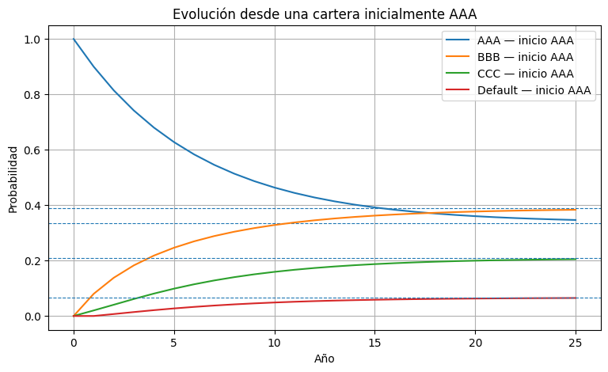
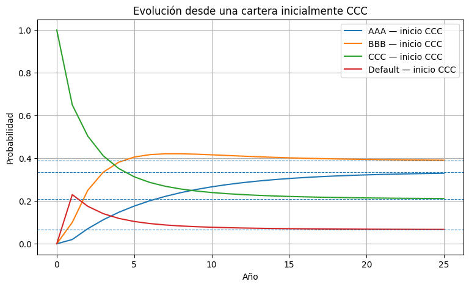

<!DOCTYPE html>


<html lang="en" data-content_root="../../" >

  <head>
    <meta charset="utf-8" />
    <meta name="viewport" content="width=device-width, initial-scale=1.0" /><meta name="viewport" content="width=device-width, initial-scale=1" />

    <title>Semana 2 — Análisis transitorio y estado estable &#8212; Libro Modelos de Decisión en el Tiempo - IIND 3518</title>
  
  
  
  <script data-cfasync="false">
    document.documentElement.dataset.mode = localStorage.getItem("mode") || "";
    document.documentElement.dataset.theme = localStorage.getItem("theme") || "";
  </script>
  
  <!-- Loaded before other Sphinx assets -->
  <link href="../../_static/styles/theme.css?digest=dfe6caa3a7d634c4db9b" rel="stylesheet" />
<link href="../../_static/styles/bootstrap.css?digest=dfe6caa3a7d634c4db9b" rel="stylesheet" />
<link href="../../_static/styles/pydata-sphinx-theme.css?digest=dfe6caa3a7d634c4db9b" rel="stylesheet" />

  
  <link href="../../_static/vendor/fontawesome/6.5.2/css/all.min.css?digest=dfe6caa3a7d634c4db9b" rel="stylesheet" />
  <link rel="preload" as="font" type="font/woff2" crossorigin href="../../_static/vendor/fontawesome/6.5.2/webfonts/fa-solid-900.woff2" />
<link rel="preload" as="font" type="font/woff2" crossorigin href="../../_static/vendor/fontawesome/6.5.2/webfonts/fa-brands-400.woff2" />
<link rel="preload" as="font" type="font/woff2" crossorigin href="../../_static/vendor/fontawesome/6.5.2/webfonts/fa-regular-400.woff2" />

    <link rel="stylesheet" type="text/css" href="../../_static/pygments.css?v=03e43079" />
    <link rel="stylesheet" type="text/css" href="../../_static/styles/sphinx-book-theme.css?v=eba8b062" />
    <link rel="stylesheet" type="text/css" href="../../_static/togglebutton.css?v=9c3e77be" />
    <link rel="stylesheet" type="text/css" href="../../_static/copybutton.css?v=76b2166b" />
    <link rel="stylesheet" type="text/css" href="../../_static/mystnb.8ecb98da25f57f5357bf6f572d296f466b2cfe2517ffebfabe82451661e28f02.css" />
    <link rel="stylesheet" type="text/css" href="../../_static/sphinx-thebe.css?v=4fa983c6" />
    <link rel="stylesheet" type="text/css" href="../../_static/sphinx-design.min.css?v=95c83b7e" />
    <link rel="stylesheet" type="text/css" href="../../_static/custom.css?v=0361f5db" />
  
  <!-- Pre-loaded scripts that we'll load fully later -->
  <link rel="preload" as="script" href="../../_static/scripts/bootstrap.js?digest=dfe6caa3a7d634c4db9b" />
<link rel="preload" as="script" href="../../_static/scripts/pydata-sphinx-theme.js?digest=dfe6caa3a7d634c4db9b" />
  <script src="../../_static/vendor/fontawesome/6.5.2/js/all.min.js?digest=dfe6caa3a7d634c4db9b"></script>

    <script src="../../_static/documentation_options.js?v=9eb32ce0"></script>
    <script src="../../_static/doctools.js?v=9a2dae69"></script>
    <script src="../../_static/sphinx_highlight.js?v=dc90522c"></script>
    <script src="../../_static/clipboard.min.js?v=a7894cd8"></script>
    <script src="../../_static/copybutton.js?v=f281be69"></script>
    <script src="../../_static/scripts/sphinx-book-theme.js?v=887ef09a"></script>
    <script>let toggleHintShow = 'Click to show';</script>
    <script>let toggleHintHide = 'Click to hide';</script>
    <script>let toggleOpenOnPrint = 'true';</script>
    <script src="../../_static/togglebutton.js?v=1ae7504c"></script>
    <script>var togglebuttonSelector = '.toggle, .admonition.dropdown';</script>
    <script src="../../_static/design-tabs.js?v=f930bc37"></script>
    <script>const THEBE_JS_URL = "https://unpkg.com/thebe@0.8.2/lib/index.js"; const thebe_selector = ".thebe,.cell"; const thebe_selector_input = "pre"; const thebe_selector_output = ".output, .cell_output"</script>
    <script async="async" src="../../_static/sphinx-thebe.js?v=c100c467"></script>
    <script>var togglebuttonSelector = '.toggle, .admonition.dropdown';</script>
    <script>const THEBE_JS_URL = "https://unpkg.com/thebe@0.8.2/lib/index.js"; const thebe_selector = ".thebe,.cell"; const thebe_selector_input = "pre"; const thebe_selector_output = ".output, .cell_output"</script>
    <script>window.MathJax = {"options": {"processHtmlClass": "tex2jax_process|mathjax_process|math|output_area|tex2jax_ignore|mathjax_ignore"}}</script>
    <script defer="defer" src="https://cdn.jsdelivr.net/npm/mathjax@3/es5/tex-mml-chtml.js"></script>
    <script>DOCUMENTATION_OPTIONS.pagename = 'content/complementarias/Semana_2_Transitorio_y_Estado_Estable_v3';</script>
    <link rel="index" title="Index" href="../../genindex.html" />
    <link rel="search" title="Search" href="../../search.html" />
    <link rel="next" title="Semana 3 — Tiempos de Primera Pasada y Ocupación" href="Semana_3_Primera_Pasada_y_Ocupacion_v3.html" />
    <link rel="prev" title="Semana 1 — Repaso de probabilidad y cadenas de Markov en Python" href="Semana_1_Cadenas_de_Markov_en_Python_v3.html" />
  <meta name="viewport" content="width=device-width, initial-scale=1"/>
  <meta name="docsearch:language" content="en"/>
  </head>
  
  
  <body data-bs-spy="scroll" data-bs-target=".bd-toc-nav" data-offset="180" data-bs-root-margin="0px 0px -60%" data-default-mode="">

  
  
  <div id="pst-skip-link" class="skip-link d-print-none"><a href="#main-content">Skip to main content</a></div>
  
  <div id="pst-scroll-pixel-helper"></div>
  
  <button type="button" class="btn rounded-pill" id="pst-back-to-top">
    <i class="fa-solid fa-arrow-up"></i>Back to top</button>

  
  <input type="checkbox"
          class="sidebar-toggle"
          id="pst-primary-sidebar-checkbox"/>
  <label class="overlay overlay-primary" for="pst-primary-sidebar-checkbox"></label>
  
  <input type="checkbox"
          class="sidebar-toggle"
          id="pst-secondary-sidebar-checkbox"/>
  <label class="overlay overlay-secondary" for="pst-secondary-sidebar-checkbox"></label>
  
  <div class="search-button__wrapper">
    <div class="search-button__overlay"></div>
    <div class="search-button__search-container">
<form class="bd-search d-flex align-items-center"
      action="../../search.html"
      method="get">
  <i class="fa-solid fa-magnifying-glass"></i>
  <input type="search"
         class="form-control"
         name="q"
         id="search-input"
         placeholder="Search this book..."
         aria-label="Search this book..."
         autocomplete="off"
         autocorrect="off"
         autocapitalize="off"
         spellcheck="false"/>
  <span class="search-button__kbd-shortcut"><kbd class="kbd-shortcut__modifier">Ctrl</kbd>+<kbd>K</kbd></span>
</form></div>
  </div>

  <div class="pst-async-banner-revealer d-none">
  <aside id="bd-header-version-warning" class="d-none d-print-none" aria-label="Version warning"></aside>
</div>

  
    <header class="bd-header navbar navbar-expand-lg bd-navbar d-print-none">
    </header>
  

  <div class="bd-container">
    <div class="bd-container__inner bd-page-width">
      
      
      
      <div class="bd-sidebar-primary bd-sidebar">
        

  
  <div class="sidebar-header-items sidebar-primary__section">
    
    
    
    
  </div>
  
    <div class="sidebar-primary-items__start sidebar-primary__section">
        <div class="sidebar-primary-item">

  
    
  

<a class="navbar-brand logo" href="../../intro.html">
  
  
  
  
  
    
    
      
    
    
    
    <script>document.write(``);</script>
  
  
</a></div>
        <div class="sidebar-primary-item">

 <script>
 document.write(`
   <button class="btn search-button-field search-button__button" title="Search" aria-label="Search" data-bs-placement="bottom" data-bs-toggle="tooltip">
    <i class="fa-solid fa-magnifying-glass"></i>
    <span class="search-button__default-text">Search</span>
    <span class="search-button__kbd-shortcut"><kbd class="kbd-shortcut__modifier">Ctrl</kbd>+<kbd class="kbd-shortcut__modifier">K</kbd></span>
   </button>
 `);
 </script></div>
        <div class="sidebar-primary-item"><nav class="bd-links bd-docs-nav" aria-label="Main">
    <div class="bd-toc-item navbar-nav active">
        
        <ul class="nav bd-sidenav bd-sidenav__home-link">
            <li class="toctree-l1">
                <a class="reference internal" href="../../intro.html">
                    Bienvenidos al libro del curso Modelos de Decisión en el Tiempo
                </a>
            </li>
        </ul>
        <p aria-level="2" class="caption" role="heading"><span class="caption-text">Complementarias</span></p>
<ul class="current nav bd-sidenav">
<li class="toctree-l1"><a class="reference internal" href="Complementaria_0_Fundamentos_de_Python_SOLUCIONES.html">Complementaria 0 — Fundamentos de Python</a></li>


<li class="toctree-l1"><a class="reference internal" href="Semana_1_Cadenas_de_Markov_en_Python_v3.html">Semana 1 — Repaso de probabilidad y cadenas de Markov en Python</a></li>
<li class="toctree-l1 current active"><a class="current reference internal" href="#">Semana 2 — Análisis transitorio y estado estable</a></li>
<li class="toctree-l1"><a class="reference internal" href="Semana_3_Primera_Pasada_y_Ocupacion_v3.html">Semana 3 — Tiempos de Primera Pasada y Ocupación</a></li>
<li class="toctree-l1"><a class="reference internal" href="Semana_4_Cadenas_Absorbentes_v3.html">Semana 4 — Cadenas absorbentes</a></li>
<li class="toctree-l1"><a class="reference internal" href="Semana_7_MDP_y_Backward_Induction_v4.html">Semana 7 — MDP y Backward Induction</a></li>
<li class="toctree-l1"><a class="reference internal" href="Semana_8_Horizonte_Infinito_VI_PI_LP_v3.html">Semana 8 — MDP de horizonte infinito: VI, PI y LP</a></li>


<li class="toctree-l1"><a class="reference internal" href="Semana_9_Horizonte_Rodante_v4_final.html">Semana 9 — Horizonte Rodante (RH): inventarios con demanda estacional</a></li>
<li class="toctree-l1"><a class="reference internal" href="Semana_10_Rollout_y_Benchmarking_v4_final.html">Semana 10 — Rollout y benchmarking</a></li>
<li class="toctree-l1"><a class="reference internal" href="Semana_12_MC_y_TD0_v4_final.html">Semana 12 — Evaluación Monte Carlo y TD(0)</a></li>
<li class="toctree-l1"><a class="reference internal" href="Semana_13_SARSA_Q_learning_v4_final.html">Semana 13 — SARSA y Q-learning: control TD sin modelo</a></li>


<li class="toctree-l1"><a class="reference internal" href="Semana_14_Double_Q_y_Shaping_v4_final.html">Semana 14 — Double Q-learning y diseño de recompensas</a></li>


</ul>

    </div>
</nav></div>
    </div>
  
  
  <div class="sidebar-primary-items__end sidebar-primary__section">
  </div>
  
  <div id="rtd-footer-container"></div>


      </div>
      
      <main id="main-content" class="bd-main" role="main">
        
        

<div class="sbt-scroll-pixel-helper"></div>

          <div class="bd-content">
            <div class="bd-article-container">
              
              <div class="bd-header-article d-print-none">
<div class="header-article-items header-article__inner">
  
    <div class="header-article-items__start">
      
        <div class="header-article-item"><button class="sidebar-toggle primary-toggle btn btn-sm" title="Toggle primary sidebar" data-bs-placement="bottom" data-bs-toggle="tooltip">
  <span class="fa-solid fa-bars"></span>
</button></div>
      
    </div>
  
  
    <div class="header-article-items__end">
      
        <div class="header-article-item">

<div class="article-header-buttons">


<div class="dropdown dropdown-download-buttons">
  <button class="btn dropdown-toggle" type="button" data-bs-toggle="dropdown" aria-expanded="false" aria-label="Download this page">
    <i class="fas fa-download"></i>
  </button>
  <ul class="dropdown-menu">
      
      
      
      <li><a href="../../_sources/content/complementarias/Semana_2_Transitorio_y_Estado_Estable_v3.ipynb" target="_blank"
   class="btn btn-sm btn-download-source-button dropdown-item"
   title="Download source file"
   data-bs-placement="left" data-bs-toggle="tooltip"
>
  

<span class="btn__icon-container">
  <i class="fas fa-file"></i>
  </span>
<span class="btn__text-container">.ipynb</span>
</a>
</li>
      
      
      
      
      <li>
<button onclick="window.print()"
  class="btn btn-sm btn-download-pdf-button dropdown-item"
  title="Print to PDF"
  data-bs-placement="left" data-bs-toggle="tooltip"
>
  

<span class="btn__icon-container">
  <i class="fas fa-file-pdf"></i>
  </span>
<span class="btn__text-container">.pdf</span>
</button>
</li>
      
  </ul>
</div>


<button onclick="toggleFullScreen()"
  class="btn btn-sm btn-fullscreen-button"
  title="Fullscreen mode"
  data-bs-placement="bottom" data-bs-toggle="tooltip"
>
  

<span class="btn__icon-container">
  <i class="fas fa-expand"></i>
  </span>

</button>


<script>
document.write(`
  <button class="btn btn-sm nav-link pst-navbar-icon theme-switch-button" title="light/dark" aria-label="light/dark" data-bs-placement="bottom" data-bs-toggle="tooltip">
    <i class="theme-switch fa-solid fa-sun fa-lg" data-mode="light"></i>
    <i class="theme-switch fa-solid fa-moon fa-lg" data-mode="dark"></i>
    <i class="theme-switch fa-solid fa-circle-half-stroke fa-lg" data-mode="auto"></i>
  </button>
`);
</script>


<script>
document.write(`
  <button class="btn btn-sm pst-navbar-icon search-button search-button__button" title="Search" aria-label="Search" data-bs-placement="bottom" data-bs-toggle="tooltip">
    <i class="fa-solid fa-magnifying-glass fa-lg"></i>
  </button>
`);
</script>
<button class="sidebar-toggle secondary-toggle btn btn-sm" title="Toggle secondary sidebar" data-bs-placement="bottom" data-bs-toggle="tooltip">
    <span class="fa-solid fa-list"></span>
</button>
</div></div>
      
    </div>
  
</div>
</div>
              
              

<div id="jb-print-docs-body" class="onlyprint">
    <h1>Semana 2 — Análisis transitorio y estado estable</h1>
    <!-- Table of contents -->
    <div id="print-main-content">
        <div id="jb-print-toc">
            
            <div>
                <h2> Contents </h2>
            </div>
            <nav aria-label="Page">
                <ul class="visible nav section-nav flex-column">
<li class="toc-h2 nav-item toc-entry"><a class="reference internal nav-link" href="#como-leer-el-codigo">Cómo leer el código</a></li>
<li class="toc-h2 nav-item toc-entry"><a class="reference internal nav-link" href="#preparacion-del-entorno">Preparación del entorno</a></li>
<li class="toc-h2 nav-item toc-entry"><a class="reference internal nav-link" href="#ejercicio-1-degradacion-de-un-equipo-cnc-basico">Ejercicio 1 — Degradación de un equipo CNC <em>(básico)</em></a><ul class="nav section-nav flex-column">
<li class="toc-h3 nav-item toc-entry"><a class="reference internal nav-link" href="#propiedades-verificadas-con-jmarkov">Propiedades verificadas con <code class="docutils literal notranslate"><span class="pre">jmarkov</span></code></a></li>
</ul>
</li>
<li class="toc-h2 nav-item toc-entry"><a class="reference internal nav-link" href="#ejercicio-2-rating-crediticio-intermedio">Ejercicio 2 — Rating crediticio <em>(intermedio)</em></a><ul class="nav section-nav flex-column">
<li class="toc-h3 nav-item toc-entry"><a class="reference internal nav-link" href="#visualizacion-proporcionada">🎨 Visualización proporcionada</a></li>
</ul>
</li>
<li class="toc-h2 nav-item toc-entry"><a class="reference internal nav-link" href="#ejercicio-3-ciclo-de-vida-de-un-cliente-de-comercio-electronico-reto-guiado">Ejercicio 3 — Ciclo de vida de un cliente de comercio electrónico <em>(reto guiado)</em></a><ul class="nav section-nav flex-column">
<li class="toc-h3 nav-item toc-entry"><a class="reference internal nav-link" href="#a-1-comprender-tres-filas-representativas">a.1) Comprender tres filas representativas</a></li>
<li class="toc-h3 nav-item toc-entry"><a class="reference internal nav-link" href="#a-2-generalizar-la-regla">a.2) Generalizar la regla</a></li>
</ul>
</li>
<li class="toc-h2 nav-item toc-entry"><a class="reference internal nav-link" href="#ejercicio-4-ocupacion-de-un-hub-logistico-ejercicio-abierto-con-apoyo-de-ia">Ejercicio 4 — Ocupación de un hub logístico <em>(ejercicio abierto con apoyo de IA)</em></a><ul class="nav section-nav flex-column">
<li class="toc-h3 nav-item toc-entry"><a class="reference internal nav-link" href="#reglas-que-deben-derivarse-antes-de-programar">Reglas que deben derivarse antes de programar</a></li>
<li class="toc-h3 nav-item toc-entry"><a class="reference internal nav-link" href="#tareas">Tareas</a></li>
<li class="toc-h3 nav-item toc-entry"><a class="reference internal nav-link" href="#paso-1-obtenga-una-referencia-antes-de-consultar-la-ia">Paso 1 — Obtenga una referencia antes de consultar la IA</a></li>
<li class="toc-h3 nav-item toc-entry"><a class="reference internal nav-link" href="#paso-2-construya-cuidadosamente-el-prompt">Paso 2 — Construya cuidadosamente el prompt</a></li>
<li class="toc-h3 nav-item toc-entry"><a class="reference internal nav-link" href="#id1">🎨 Visualización proporcionada</a></li>
</ul>
</li>
</ul>
            </nav>
        </div>
    </div>
</div>

              
                
<div id="searchbox"></div>
                <article class="bd-article">
                  
  <section id="semana-2-analisis-transitorio-y-estado-estable">
<h1>Semana 2 — Análisis transitorio y estado estable<a class="headerlink" href="#semana-2-analisis-transitorio-y-estado-estable" title="Link to this heading">#</a></h1>
<p>Esta sesión profundiza en dos herramientas centrales de las cadenas de Markov:</p>
<ul class="simple">
<li><p><strong>Distribución transitoria:</strong> <span class="math notranslate nohighlight">\(\boldsymbol{\pi}(n)=\boldsymbol{\pi}(0)P^n\)</span>, que describe cómo evoluciona la distribución en el tiempo.</p></li>
<li><p><strong>Distribución estacionaria:</strong> <span class="math notranslate nohighlight">\(\boldsymbol{\pi}=\boldsymbol{\pi}P\)</span>, con <span class="math notranslate nohighlight">\(\sum_i\pi_i=1\)</span>, que describe el comportamiento de largo plazo cuando la cadena converge.</p></li>
</ul>
<p>En cada ejercicio realizaremos primero los cálculos <strong>con NumPy, sin usar <code class="docutils literal notranslate"><span class="pre">jmarkov</span></code></strong>. Al final utilizaremos la librería únicamente para verificar los resultados.</p>
<section id="como-leer-el-codigo">
<h2>Cómo leer el código<a class="headerlink" href="#como-leer-el-codigo" title="Link to this heading">#</a></h2>
<ul class="simple">
<li><p>🧠 <strong>Código central:</strong> debe poder explicar qué representa cada instrucción.</p></li>
<li><p>🧩 <strong>Nueva herramienta de Python:</strong> se introduce y explica antes de utilizarla.</p></li>
<li><p>🎨 <strong>Visualización proporcionada:</strong> debe ejecutarla e interpretar la gráfica, pero no necesita dominar todavía todos los comandos de Matplotlib.</p></li>
</ul>
</section>
<section id="preparacion-del-entorno">
<h2>Preparación del entorno<a class="headerlink" href="#preparacion-del-entorno" title="Link to this heading">#</a></h2>
<p>Ejecute primero la instalación y después la celda de importaciones. Si el entorno solicita reiniciar el kernel, hágalo y vuelva a ejecutar las celdas desde el comienzo.</p>
<div class="cell docutils container">
<div class="cell_input docutils container">
<div class="highlight-ipython3 notranslate"><div class="highlight"><pre><span></span><span class="o">!</span>pip<span class="w"> </span>install<span class="w"> </span>jmarkov
</pre></div>
</div>
</div>
<div class="cell_output docutils container">
<div class="output stream highlight-myst-ansi notranslate"><div class="highlight"><pre><span></span>Requirement already satisfied: jmarkov in /opt/hostedtoolcache/Python/3.11.15/x64/lib/python3.11/site-packages (0.3.9)
Requirement already satisfied: numpy in /opt/hostedtoolcache/Python/3.11.15/x64/lib/python3.11/site-packages (from jmarkov) (2.4.1)
Requirement already satisfied: scipy in /opt/hostedtoolcache/Python/3.11.15/x64/lib/python3.11/site-packages (from jmarkov) (1.17.0)
Requirement already satisfied: typing in /opt/hostedtoolcache/Python/3.11.15/x64/lib/python3.11/site-packages (from jmarkov) (3.7.4.3)
</pre></div>
</div>
</div>
</div>
<div class="cell docutils container">
<div class="cell_input docutils container">
<div class="highlight-ipython3 notranslate"><div class="highlight"><pre><span></span><span class="kn">import</span><span class="w"> </span><span class="nn">numpy</span><span class="w"> </span><span class="k">as</span><span class="w"> </span><span class="nn">np</span>
<span class="kn">import</span><span class="w"> </span><span class="nn">matplotlib.pyplot</span><span class="w"> </span><span class="k">as</span><span class="w"> </span><span class="nn">plt</span>
<span class="kn">from</span><span class="w"> </span><span class="nn">jmarkov.dtmc</span><span class="w"> </span><span class="kn">import</span> <span class="n">dtmc</span>
</pre></div>
</div>
</div>
</div>
</section>
<hr class="docutils" />
<section id="ejercicio-1-degradacion-de-un-equipo-cnc-basico">
<h2>Ejercicio 1 — Degradación de un equipo CNC <em>(básico)</em><a class="headerlink" href="#ejercicio-1-degradacion-de-un-equipo-cnc-basico" title="Link to this heading">#</a></h2>
<p>Este ejercicio retoma la máquina industrial estudiada al final de la semana 1. Ahora desarrollaremos de manera guiada su comportamiento transitorio, su distribución estacionaria y algunas métricas de desempeño.</p>
<p>Una empresa manufacturera inspecciona semanalmente sus máquinas CNC. Cada máquina puede encontrarse en uno de cuatro estados. Cuando una máquina entra en <strong>Avería</strong>, el equipo de mantenimiento la repara, pero la siguiente semana puede quedar en cualquiera de los estados operativos.</p>
<p>Cada semana en estado de Avería genera un costo de producción perdida de <strong>$8 000</strong>.</p>
<div class="math notranslate nohighlight">
\[
X_n=\text{estado de la máquina al inicio de la semana }n
\]</div>
<div class="math notranslate nohighlight">
\[
\mathcal{S}=\{0=\text{Óptimo},\;1=\text{Regular},\;2=\text{Deficiente},\;3=\text{Avería}\}
\]</div>
<div class="math notranslate nohighlight">
\[\begin{split}
P=
\begin{pmatrix}
0.70&amp;0.25&amp;0.05&amp;0.00\\
0.10&amp;0.55&amp;0.30&amp;0.05\\
0.00&amp;0.15&amp;0.40&amp;0.45\\
0.80&amp;0.20&amp;0.00&amp;0.00
\end{pmatrix}
\end{split}\]</div>
<p><strong>a)</strong> Construya la matriz de transición como un arreglo de NumPy y verifique que cada fila suma 1.</p>
<div class="cell docutils container">
<div class="cell_input docutils container">
<div class="highlight-ipython3 notranslate"><div class="highlight"><pre><span></span><span class="n">estados_cnc</span> <span class="o">=</span> <span class="p">[</span><span class="s1">&#39;Óptimo&#39;</span><span class="p">,</span> <span class="s1">&#39;Regular&#39;</span><span class="p">,</span> <span class="s1">&#39;Deficiente&#39;</span><span class="p">,</span> <span class="s1">&#39;Avería&#39;</span><span class="p">]</span>

<span class="n">P_cnc</span> <span class="o">=</span> <span class="n">np</span><span class="o">.</span><span class="n">array</span><span class="p">([</span>
    <span class="p">[</span><span class="mf">0.70</span><span class="p">,</span> <span class="mf">0.25</span><span class="p">,</span> <span class="mf">0.05</span><span class="p">,</span> <span class="mf">0.00</span><span class="p">],</span>
    <span class="p">[</span><span class="mf">0.10</span><span class="p">,</span> <span class="mf">0.55</span><span class="p">,</span> <span class="mf">0.30</span><span class="p">,</span> <span class="mf">0.05</span><span class="p">],</span>
    <span class="p">[</span><span class="mf">0.00</span><span class="p">,</span> <span class="mf">0.15</span><span class="p">,</span> <span class="mf">0.40</span><span class="p">,</span> <span class="mf">0.45</span><span class="p">],</span>
    <span class="p">[</span><span class="mf">0.80</span><span class="p">,</span> <span class="mf">0.20</span><span class="p">,</span> <span class="mf">0.00</span><span class="p">,</span> <span class="mf">0.00</span><span class="p">]</span>
<span class="p">])</span>

<span class="k">for</span> <span class="n">indice_estado</span> <span class="ow">in</span> <span class="nb">range</span><span class="p">(</span><span class="nb">len</span><span class="p">(</span><span class="n">estados_cnc</span><span class="p">)):</span>
    <span class="n">suma_fila</span> <span class="o">=</span> <span class="n">P_cnc</span><span class="p">[</span><span class="n">indice_estado</span><span class="p">,</span> <span class="p">:]</span><span class="o">.</span><span class="n">sum</span><span class="p">()</span>
    <span class="nb">print</span><span class="p">(</span>
        <span class="s2">&quot;Fila&quot;</span><span class="p">,</span> <span class="n">estados_cnc</span><span class="p">[</span><span class="n">indice_estado</span><span class="p">],</span>
        <span class="s2">&quot;- suma:&quot;</span><span class="p">,</span> <span class="nb">round</span><span class="p">(</span><span class="n">suma_fila</span><span class="p">,</span> <span class="mi">2</span><span class="p">)</span>
    <span class="p">)</span>
</pre></div>
</div>
</div>
<div class="cell_output docutils container">
<div class="output stream highlight-myst-ansi notranslate"><div class="highlight"><pre><span></span>Fila Óptimo - suma: 1.0
Fila Regular - suma: 1.0
Fila Deficiente - suma: 1.0
Fila Avería - suma: 1.0
</pre></div>
</div>
</div>
</div>
<p><strong>b)</strong> Suponga que la máquina comienza en estado <strong>Óptimo</strong>, es decir,</p>
<div class="math notranslate nohighlight">
\[
\boldsymbol{\pi}(0)=[1,0,0,0].
\]</div>
<p>Calcule primero <span class="math notranslate nohighlight">\(\boldsymbol{\pi}(1)\)</span> término a término. Después repita el producto <span class="math notranslate nohighlight">\(\boldsymbol{\pi}(n)=\boldsymbol{\pi}(n-1)P\)</span> hasta la semana 5.</p>
<div class="cell docutils container">
<div class="cell_input docutils container">
<div class="highlight-ipython3 notranslate"><div class="highlight"><pre><span></span><span class="c1"># Cálculo término a término de pi(1)</span>

<span class="n">pi0_cnc</span> <span class="o">=</span> <span class="n">np</span><span class="o">.</span><span class="n">array</span><span class="p">([</span><span class="mf">1.0</span><span class="p">,</span> <span class="mf">0.0</span><span class="p">,</span> <span class="mf">0.0</span><span class="p">,</span> <span class="mf">0.0</span><span class="p">])</span>

<span class="n">pi1_cnc_termino_a_termino</span> <span class="o">=</span> <span class="n">np</span><span class="o">.</span><span class="n">array</span><span class="p">([</span><span class="mf">0.0</span><span class="p">,</span> <span class="mf">0.0</span><span class="p">,</span> <span class="mf">0.0</span><span class="p">,</span> <span class="mf">0.0</span><span class="p">])</span>

<span class="k">for</span> <span class="n">columna</span> <span class="ow">in</span> <span class="nb">range</span><span class="p">(</span><span class="mi">4</span><span class="p">):</span>
    <span class="n">suma</span> <span class="o">=</span> <span class="mf">0.0</span>

    <span class="k">for</span> <span class="n">fila</span> <span class="ow">in</span> <span class="nb">range</span><span class="p">(</span><span class="mi">4</span><span class="p">):</span>
        <span class="n">suma</span> <span class="o">=</span> <span class="n">suma</span> <span class="o">+</span> <span class="n">pi0_cnc</span><span class="p">[</span><span class="n">fila</span><span class="p">]</span> <span class="o">*</span> <span class="n">P_cnc</span><span class="p">[</span><span class="n">fila</span><span class="p">,</span> <span class="n">columna</span><span class="p">]</span>

    <span class="n">pi1_cnc_termino_a_termino</span><span class="p">[</span><span class="n">columna</span><span class="p">]</span> <span class="o">=</span> <span class="n">suma</span>

<span class="nb">print</span><span class="p">(</span>
    <span class="s2">&quot;pi(1) término a término:&quot;</span><span class="p">,</span>
    <span class="n">np</span><span class="o">.</span><span class="n">round</span><span class="p">(</span><span class="n">pi1_cnc_termino_a_termino</span><span class="p">,</span> <span class="mi">4</span><span class="p">)</span>
<span class="p">)</span>

<span class="nb">print</span><span class="p">(</span>
    <span class="s2">&quot;pi(1) mediante pi0 @ P:&quot;</span><span class="p">,</span>
    <span class="n">np</span><span class="o">.</span><span class="n">round</span><span class="p">(</span><span class="n">pi0_cnc</span> <span class="o">@</span> <span class="n">P_cnc</span><span class="p">,</span> <span class="mi">4</span><span class="p">)</span>
<span class="p">)</span>
</pre></div>
</div>
</div>
<div class="cell_output docutils container">
<div class="output stream highlight-myst-ansi notranslate"><div class="highlight"><pre><span></span>pi(1) término a término: [0.7  0.25 0.05 0.  ]
pi(1) mediante pi0 @ P: [0.7  0.25 0.05 0.  ]
</pre></div>
</div>
</div>
</div>
<div class="cell docutils container">
<div class="cell_input docutils container">
<div class="highlight-ipython3 notranslate"><div class="highlight"><pre><span></span><span class="c1"># Evolución de la distribución hasta la semana 5</span>

<span class="n">pi_cnc_actual</span> <span class="o">=</span> <span class="n">pi0_cnc</span><span class="o">.</span><span class="n">copy</span><span class="p">()</span>

<span class="k">for</span> <span class="n">semana</span> <span class="ow">in</span> <span class="nb">range</span><span class="p">(</span><span class="mi">1</span><span class="p">,</span> <span class="mi">6</span><span class="p">):</span>
    <span class="n">pi_cnc_actual</span> <span class="o">=</span> <span class="n">pi_cnc_actual</span> <span class="o">@</span> <span class="n">P_cnc</span>

    <span class="k">if</span> <span class="n">semana</span> <span class="o">==</span> <span class="mi">1</span><span class="p">:</span>
        <span class="n">pi1_cnc</span> <span class="o">=</span> <span class="n">pi_cnc_actual</span><span class="o">.</span><span class="n">copy</span><span class="p">()</span>

    <span class="k">if</span> <span class="n">semana</span> <span class="o">==</span> <span class="mi">3</span><span class="p">:</span>
        <span class="n">pi3_cnc</span> <span class="o">=</span> <span class="n">pi_cnc_actual</span><span class="o">.</span><span class="n">copy</span><span class="p">()</span>

    <span class="k">if</span> <span class="n">semana</span> <span class="o">==</span> <span class="mi">5</span><span class="p">:</span>
        <span class="n">pi5_cnc</span> <span class="o">=</span> <span class="n">pi_cnc_actual</span><span class="o">.</span><span class="n">copy</span><span class="p">()</span>

    <span class="k">if</span> <span class="n">semana</span> <span class="o">==</span> <span class="mi">1</span> <span class="ow">or</span> <span class="n">semana</span> <span class="o">==</span> <span class="mi">3</span> <span class="ow">or</span> <span class="n">semana</span> <span class="o">==</span> <span class="mi">5</span><span class="p">:</span>
        <span class="nb">print</span><span class="p">(</span><span class="s2">&quot;Semana&quot;</span><span class="p">,</span> <span class="n">semana</span><span class="p">)</span>

        <span class="k">for</span> <span class="n">indice_estado</span> <span class="ow">in</span> <span class="nb">range</span><span class="p">(</span><span class="nb">len</span><span class="p">(</span><span class="n">estados_cnc</span><span class="p">)):</span>
            <span class="nb">print</span><span class="p">(</span>
                <span class="s2">&quot;  P(X =&quot;</span><span class="p">,</span> <span class="n">estados_cnc</span><span class="p">[</span><span class="n">indice_estado</span><span class="p">],</span> <span class="s2">&quot;) =&quot;</span><span class="p">,</span>
                <span class="nb">round</span><span class="p">(</span><span class="n">pi_cnc_actual</span><span class="p">[</span><span class="n">indice_estado</span><span class="p">],</span> <span class="mi">4</span><span class="p">)</span>
            <span class="p">)</span>

        <span class="nb">print</span><span class="p">()</span>

<span class="nb">print</span><span class="p">(</span>
    <span class="s2">&quot;P(Avería en la semana 5 | X0 = Óptimo) =&quot;</span><span class="p">,</span>
    <span class="nb">round</span><span class="p">(</span><span class="n">pi5_cnc</span><span class="p">[</span><span class="mi">3</span><span class="p">],</span> <span class="mi">4</span><span class="p">)</span>
<span class="p">)</span>
</pre></div>
</div>
</div>
<div class="cell_output docutils container">
<div class="output stream highlight-myst-ansi notranslate"><div class="highlight"><pre><span></span>Semana 1
  P(X = Óptimo ) = 0.7
  P(X = Regular ) = 0.25
  P(X = Deficiente ) = 0.05
  P(X = Avería ) = 0.0

Semana 3
  P(X = Óptimo ) = 0.4205
  P(X = Regular ) = 0.3312
  P(X = Deficiente ) = 0.1738
  P(X = Avería ) = 0.0745

Semana 5
  P(X = Óptimo ) = 0.3796
  P(X = Regular ) = 0.3248
  P(X = Deficiente ) = 0.1938
  P(X = Avería ) = 0.1019

P(Avería en la semana 5 | X0 = Óptimo) = 0.1019
</pre></div>
</div>
</div>
</div>
<p><strong>c)</strong> Calcule la distribución estacionaria iterando hasta que el cambio máximo entre dos distribuciones consecutivas sea menor que</p>
<div class="math notranslate nohighlight">
\[
0.00000001=10^{-8}.
\]</div>
<p>La expresión <code class="docutils literal notranslate"><span class="pre">np.max(np.abs(pi_nueva</span> <span class="pre">-</span> <span class="pre">pi_anterior))</span></code> calcula precisamente ese cambio máximo.</p>
<p><code class="docutils literal notranslate"><span class="pre">np.allclose(a,</span> <span class="pre">b,</span> <span class="pre">atol=0.001)</span></code> verifica si dos arreglos son aproximadamente iguales, permitiendo diferencias absolutas menores que 0.001.</p>
<div class="cell docutils container">
<div class="cell_input docutils container">
<div class="highlight-ipython3 notranslate"><div class="highlight"><pre><span></span><span class="n">pi_cnc_anterior</span> <span class="o">=</span> <span class="n">np</span><span class="o">.</span><span class="n">array</span><span class="p">([</span><span class="mf">0.25</span><span class="p">,</span> <span class="mf">0.25</span><span class="p">,</span> <span class="mf">0.25</span><span class="p">,</span> <span class="mf">0.25</span><span class="p">])</span>

<span class="n">tolerancia</span> <span class="o">=</span> <span class="mf">0.00000001</span>
<span class="n">maximo_iteraciones</span> <span class="o">=</span> <span class="mi">1000</span>

<span class="k">for</span> <span class="n">iteracion</span> <span class="ow">in</span> <span class="nb">range</span><span class="p">(</span><span class="mi">1</span><span class="p">,</span> <span class="n">maximo_iteraciones</span> <span class="o">+</span> <span class="mi">1</span><span class="p">):</span>
    <span class="n">pi_cnc_nueva</span> <span class="o">=</span> <span class="n">pi_cnc_anterior</span> <span class="o">@</span> <span class="n">P_cnc</span>

    <span class="n">cambio_maximo</span> <span class="o">=</span> <span class="n">np</span><span class="o">.</span><span class="n">max</span><span class="p">(</span>
        <span class="n">np</span><span class="o">.</span><span class="n">abs</span><span class="p">(</span><span class="n">pi_cnc_nueva</span> <span class="o">-</span> <span class="n">pi_cnc_anterior</span><span class="p">)</span>
    <span class="p">)</span>

    <span class="n">pi_cnc_anterior</span> <span class="o">=</span> <span class="n">pi_cnc_nueva</span>

    <span class="k">if</span> <span class="n">cambio_maximo</span> <span class="o">&lt;</span> <span class="n">tolerancia</span><span class="p">:</span>
        <span class="k">break</span>

<span class="n">pi_cnc_estacionaria</span> <span class="o">=</span> <span class="n">pi_cnc_anterior</span>

<span class="nb">print</span><span class="p">(</span><span class="s2">&quot;Iteraciones hasta convergencia:&quot;</span><span class="p">,</span> <span class="n">iteracion</span><span class="p">)</span>
<span class="nb">print</span><span class="p">(</span><span class="s2">&quot;Distribución estacionaria:&quot;</span><span class="p">)</span>

<span class="k">for</span> <span class="n">indice_estado</span> <span class="ow">in</span> <span class="nb">range</span><span class="p">(</span><span class="nb">len</span><span class="p">(</span><span class="n">estados_cnc</span><span class="p">)):</span>
    <span class="nb">print</span><span class="p">(</span>
        <span class="s2">&quot; &quot;</span><span class="p">,</span> <span class="n">estados_cnc</span><span class="p">[</span><span class="n">indice_estado</span><span class="p">],</span> <span class="s2">&quot;:&quot;</span><span class="p">,</span>
        <span class="nb">round</span><span class="p">(</span><span class="n">pi_cnc_estacionaria</span><span class="p">[</span><span class="n">indice_estado</span><span class="p">],</span> <span class="mi">4</span><span class="p">),</span>
        <span class="s2">&quot;=&quot;</span><span class="p">,</span> <span class="nb">round</span><span class="p">(</span><span class="mi">100</span> <span class="o">*</span> <span class="n">pi_cnc_estacionaria</span><span class="p">[</span><span class="n">indice_estado</span><span class="p">],</span> <span class="mi">1</span><span class="p">),</span>
        <span class="s2">&quot;</span><span class="si">% d</span><span class="s2">el tiempo&quot;</span>
    <span class="p">)</span>

<span class="nb">print</span><span class="p">(</span>
    <span class="s2">&quot;Verificación pi @ P = pi:&quot;</span><span class="p">,</span>
    <span class="n">np</span><span class="o">.</span><span class="n">allclose</span><span class="p">(</span>
        <span class="n">pi_cnc_estacionaria</span> <span class="o">@</span> <span class="n">P_cnc</span><span class="p">,</span>
        <span class="n">pi_cnc_estacionaria</span>
    <span class="p">)</span>
<span class="p">)</span>
</pre></div>
</div>
</div>
<div class="cell_output docutils container">
<div class="output stream highlight-myst-ansi notranslate"><div class="highlight"><pre><span></span>Iteraciones hasta convergencia: 18
Distribución estacionaria:
  Óptimo : 0.3819 = 38.2 % del tiempo
  Regular : 0.3222 = 32.2 % del tiempo
  Deficiente : 0.1929 = 19.3 % del tiempo
  Avería : 0.1029 = 10.3 % del tiempo
Verificación pi @ P = pi: True
</pre></div>
</div>
</div>
</div>
<p><strong>d)</strong> Calcule la disponibilidad de la máquina y el costo esperado semanal asociado al estado de Avería.</p>
<div class="cell docutils container">
<div class="cell_input docutils container">
<div class="highlight-ipython3 notranslate"><div class="highlight"><pre><span></span><span class="n">costo_averia</span> <span class="o">=</span> <span class="mi">8_000</span>

<span class="n">fraccion_averia</span> <span class="o">=</span> <span class="n">pi_cnc_estacionaria</span><span class="p">[</span><span class="mi">3</span><span class="p">]</span>
<span class="n">disponibilidad</span> <span class="o">=</span> <span class="mi">1</span> <span class="o">-</span> <span class="n">fraccion_averia</span>
<span class="n">costo_esperado_averias</span> <span class="o">=</span> <span class="n">costo_averia</span> <span class="o">*</span> <span class="n">fraccion_averia</span>

<span class="nb">print</span><span class="p">(</span>
    <span class="s2">&quot;Disponibilidad a largo plazo:&quot;</span><span class="p">,</span>
    <span class="nb">round</span><span class="p">(</span><span class="n">disponibilidad</span><span class="p">,</span> <span class="mi">4</span><span class="p">)</span>
<span class="p">)</span>

<span class="nb">print</span><span class="p">(</span>
    <span class="s2">&quot;Fracción de tiempo en Avería:&quot;</span><span class="p">,</span>
    <span class="nb">round</span><span class="p">(</span><span class="n">fraccion_averia</span><span class="p">,</span> <span class="mi">4</span><span class="p">)</span>
<span class="p">)</span>

<span class="nb">print</span><span class="p">(</span>
    <span class="s2">&quot;Costo esperado semanal por averías: $&quot;</span><span class="p">,</span>
    <span class="nb">round</span><span class="p">(</span><span class="n">costo_esperado_averias</span><span class="p">,</span> <span class="mi">2</span><span class="p">)</span>
<span class="p">)</span>
</pre></div>
</div>
</div>
<div class="cell_output docutils container">
<div class="output stream highlight-myst-ansi notranslate"><div class="highlight"><pre><span></span>Disponibilidad a largo plazo: 0.8971
Fracción de tiempo en Avería: 0.1029
Costo esperado semanal por averías: $ 823.47
</pre></div>
</div>
</div>
</div>
<p><strong>e)</strong> El departamento de mantenimiento propone una política preventiva que cambia la fila correspondiente al estado Deficiente:</p>
<div class="math notranslate nohighlight">
\[
P'_{2\cdot}=[0.30,\;0.40,\;0.25,\;0.05].
\]</div>
<p>Compare la disponibilidad y el costo esperado por averías con la política original.</p>
<blockquote>
<div><p>Esta comparación solo incorpora los costos de las averías. Para decidir si la política es económicamente conveniente también sería necesario conocer su costo de implementación.</p>
</div></blockquote>
<div class="cell docutils container">
<div class="cell_input docutils container">
<div class="highlight-ipython3 notranslate"><div class="highlight"><pre><span></span><span class="n">P_cnc_preventiva</span> <span class="o">=</span> <span class="n">P_cnc</span><span class="o">.</span><span class="n">copy</span><span class="p">()</span>
<span class="n">P_cnc_preventiva</span><span class="p">[</span><span class="mi">2</span><span class="p">,</span> <span class="p">:]</span> <span class="o">=</span> <span class="p">[</span><span class="mf">0.30</span><span class="p">,</span> <span class="mf">0.40</span><span class="p">,</span> <span class="mf">0.25</span><span class="p">,</span> <span class="mf">0.05</span><span class="p">]</span>

<span class="n">pi_preventiva_anterior</span> <span class="o">=</span> <span class="n">np</span><span class="o">.</span><span class="n">array</span><span class="p">([</span><span class="mf">0.25</span><span class="p">,</span> <span class="mf">0.25</span><span class="p">,</span> <span class="mf">0.25</span><span class="p">,</span> <span class="mf">0.25</span><span class="p">])</span>

<span class="k">for</span> <span class="n">iteracion</span> <span class="ow">in</span> <span class="nb">range</span><span class="p">(</span><span class="mi">1</span><span class="p">,</span> <span class="n">maximo_iteraciones</span> <span class="o">+</span> <span class="mi">1</span><span class="p">):</span>
    <span class="n">pi_preventiva_nueva</span> <span class="o">=</span> <span class="p">(</span>
        <span class="n">pi_preventiva_anterior</span> <span class="o">@</span> <span class="n">P_cnc_preventiva</span>
    <span class="p">)</span>

    <span class="n">cambio_maximo</span> <span class="o">=</span> <span class="n">np</span><span class="o">.</span><span class="n">max</span><span class="p">(</span>
        <span class="n">np</span><span class="o">.</span><span class="n">abs</span><span class="p">(</span>
            <span class="n">pi_preventiva_nueva</span>
            <span class="o">-</span> <span class="n">pi_preventiva_anterior</span>
        <span class="p">)</span>
    <span class="p">)</span>

    <span class="n">pi_preventiva_anterior</span> <span class="o">=</span> <span class="n">pi_preventiva_nueva</span>

    <span class="k">if</span> <span class="n">cambio_maximo</span> <span class="o">&lt;</span> <span class="n">tolerancia</span><span class="p">:</span>
        <span class="k">break</span>

<span class="n">pi_cnc_preventiva</span> <span class="o">=</span> <span class="n">pi_preventiva_anterior</span>

<span class="n">disponibilidad_preventiva</span> <span class="o">=</span> <span class="mi">1</span> <span class="o">-</span> <span class="n">pi_cnc_preventiva</span><span class="p">[</span><span class="mi">3</span><span class="p">]</span>

<span class="n">costo_averias_preventiva</span> <span class="o">=</span> <span class="p">(</span>
    <span class="n">costo_averia</span> <span class="o">*</span> <span class="n">pi_cnc_preventiva</span><span class="p">[</span><span class="mi">3</span><span class="p">]</span>
<span class="p">)</span>

<span class="n">reduccion_costo_averias</span> <span class="o">=</span> <span class="p">(</span>
    <span class="n">costo_esperado_averias</span>
    <span class="o">-</span> <span class="n">costo_averias_preventiva</span>
<span class="p">)</span>

<span class="nb">print</span><span class="p">(</span>
    <span class="s2">&quot;Disponibilidad original:&quot;</span><span class="p">,</span>
    <span class="nb">round</span><span class="p">(</span><span class="mi">100</span> <span class="o">*</span> <span class="n">disponibilidad</span><span class="p">,</span> <span class="mi">1</span><span class="p">),</span> <span class="s2">&quot;%&quot;</span>
<span class="p">)</span>

<span class="nb">print</span><span class="p">(</span>
    <span class="s2">&quot;Disponibilidad con política preventiva:&quot;</span><span class="p">,</span>
    <span class="nb">round</span><span class="p">(</span><span class="mi">100</span> <span class="o">*</span> <span class="n">disponibilidad_preventiva</span><span class="p">,</span> <span class="mi">1</span><span class="p">),</span> <span class="s2">&quot;%&quot;</span>
<span class="p">)</span>

<span class="nb">print</span><span class="p">(</span>
    <span class="s2">&quot;Costo original por averías: $&quot;</span><span class="p">,</span>
    <span class="nb">round</span><span class="p">(</span><span class="n">costo_esperado_averias</span><span class="p">,</span> <span class="mi">2</span><span class="p">)</span>
<span class="p">)</span>

<span class="nb">print</span><span class="p">(</span>
    <span class="s2">&quot;Costo con política preventiva: $&quot;</span><span class="p">,</span>
    <span class="nb">round</span><span class="p">(</span><span class="n">costo_averias_preventiva</span><span class="p">,</span> <span class="mi">2</span><span class="p">)</span>
<span class="p">)</span>

<span class="nb">print</span><span class="p">(</span>
    <span class="s2">&quot;Reducción esperada del costo por averías: $&quot;</span><span class="p">,</span>
    <span class="nb">round</span><span class="p">(</span><span class="n">reduccion_costo_averias</span><span class="p">,</span> <span class="mi">2</span><span class="p">)</span>
<span class="p">)</span>
</pre></div>
</div>
</div>
<div class="cell_output docutils container">
<div class="output stream highlight-myst-ansi notranslate"><div class="highlight"><pre><span></span>Disponibilidad original: 89.7 %
Disponibilidad con política preventiva: 97.1 %
Costo original por averías: $ 823.47
Costo con política preventiva: $ 231.39
Reducción esperada del costo por averías: $ 592.08
</pre></div>
</div>
</div>
</div>
<section id="propiedades-verificadas-con-jmarkov">
<h3>Propiedades verificadas con <code class="docutils literal notranslate"><span class="pre">jmarkov</span></code><a class="headerlink" href="#propiedades-verificadas-con-jmarkov" title="Link to this heading">#</a></h3>
<ul class="simple">
<li><p><strong>Irreducible:</strong> desde cualquier estado es posible llegar eventualmente a cualquier otro estado.</p></li>
<li><p><strong>Período:</strong> indica si los retornos a los estados están sujetos a un ciclo rígido.</p></li>
<li><p>Una cadena finita, irreducible y con período 1 es ergódica. En ese caso existe una única distribución estacionaria y las distribuciones transitorias convergen hacia ella.</p></li>
</ul>
<p>Ya hicimos los cálculos con NumPy. Ahora utilizamos <code class="docutils literal notranslate"><span class="pre">jmarkov</span></code> solamente para verificarlos.</p>
<div class="cell docutils container">
<div class="cell_input docutils container">
<div class="highlight-ipython3 notranslate"><div class="highlight"><pre><span></span><span class="n">cadena_cnc</span> <span class="o">=</span> <span class="n">dtmc</span><span class="p">(</span><span class="n">P_cnc</span><span class="p">)</span>
<span class="n">cadena_cnc_preventiva</span> <span class="o">=</span> <span class="n">dtmc</span><span class="p">(</span><span class="n">P_cnc_preventiva</span><span class="p">)</span>

<span class="nb">print</span><span class="p">(</span><span class="s2">&quot;Cadena original ergódica:&quot;</span><span class="p">,</span> <span class="n">cadena_cnc</span><span class="o">.</span><span class="n">is_ergodic</span><span class="p">())</span>
<span class="nb">print</span><span class="p">(</span><span class="s2">&quot;Cadena original irreducible:&quot;</span><span class="p">,</span> <span class="n">cadena_cnc</span><span class="o">.</span><span class="n">is_irreducible</span><span class="p">())</span>
<span class="nb">print</span><span class="p">(</span><span class="s2">&quot;Período de la cadena original:&quot;</span><span class="p">,</span> <span class="n">cadena_cnc</span><span class="o">.</span><span class="n">period</span><span class="p">())</span>

<span class="n">pi_cnc_jmarkov</span> <span class="o">=</span> <span class="n">cadena_cnc</span><span class="o">.</span><span class="n">steady_state</span><span class="p">()</span>

<span class="n">pi_preventiva_jmarkov</span> <span class="o">=</span> <span class="p">(</span>
    <span class="n">cadena_cnc_preventiva</span><span class="o">.</span><span class="n">steady_state</span><span class="p">()</span>
<span class="p">)</span>

<span class="nb">print</span><span class="p">()</span>
<span class="nb">print</span><span class="p">(</span>
    <span class="s2">&quot;pi original con NumPy:&quot;</span><span class="p">,</span>
    <span class="n">np</span><span class="o">.</span><span class="n">round</span><span class="p">(</span><span class="n">pi_cnc_estacionaria</span><span class="p">,</span> <span class="mi">4</span><span class="p">)</span>
<span class="p">)</span>

<span class="nb">print</span><span class="p">(</span>
    <span class="s2">&quot;pi original con jmarkov:&quot;</span><span class="p">,</span>
    <span class="n">np</span><span class="o">.</span><span class="n">round</span><span class="p">(</span><span class="n">pi_cnc_jmarkov</span><span class="p">,</span> <span class="mi">4</span><span class="p">)</span>
<span class="p">)</span>

<span class="nb">print</span><span class="p">(</span>
    <span class="s2">&quot;pi preventiva con NumPy:&quot;</span><span class="p">,</span>
    <span class="n">np</span><span class="o">.</span><span class="n">round</span><span class="p">(</span><span class="n">pi_cnc_preventiva</span><span class="p">,</span> <span class="mi">4</span><span class="p">)</span>
<span class="p">)</span>

<span class="nb">print</span><span class="p">(</span>
    <span class="s2">&quot;pi preventiva con jmarkov:&quot;</span><span class="p">,</span>
    <span class="n">np</span><span class="o">.</span><span class="n">round</span><span class="p">(</span><span class="n">pi_preventiva_jmarkov</span><span class="p">,</span> <span class="mi">4</span><span class="p">)</span>
<span class="p">)</span>
</pre></div>
</div>
</div>
<div class="cell_output docutils container">
<div class="output stream highlight-myst-ansi notranslate"><div class="highlight"><pre><span></span>Cadena original ergódica: True
Cadena original irreducible: True
Período de la cadena original: 1

pi original con NumPy: [0.3819 0.3222 0.1929 0.1029]
pi original con jmarkov: [0.3819 0.3222 0.1929 0.1029]
pi preventiva con NumPy: [0.3926 0.3945 0.184  0.0289]
pi preventiva con jmarkov: [0.3926 0.3945 0.184  0.0289]
</pre></div>
</div>
</div>
</div>
</section>
</section>
<hr class="docutils" />
<section id="ejercicio-2-rating-crediticio-intermedio">
<h2>Ejercicio 2 — Rating crediticio <em>(intermedio)</em><a class="headerlink" href="#ejercicio-2-rating-crediticio-intermedio" title="Link to this heading">#</a></h2>
<p>Una agencia registra la evolución anual del rating de las empresas de un portafolio:</p>
<div class="math notranslate nohighlight">
\[
\mathcal{S}=\{0=\text{AAA},\;1=\text{BBB},\;2=\text{CCC},\;3=\text{Default}\}.
\]</div>
<div class="math notranslate nohighlight">
\[\begin{split}
P=
\begin{pmatrix}
0.90&amp;0.08&amp;0.02&amp;0.00\\
0.05&amp;0.80&amp;0.12&amp;0.03\\
0.02&amp;0.10&amp;0.65&amp;0.23\\
0.15&amp;0.45&amp;0.30&amp;0.10
\end{pmatrix}
\end{split}\]</div>
<p>La pérdida esperada anual por unidad prestada asociada a cada estado es</p>
<div class="math notranslate nohighlight">
\[
\ell=[0.001,\;0.010,\;0.060,\;0.300].
\]</div>
<p><strong>a)</strong> Construya la matriz y verifique que cada fila suma 1.</p>
<div class="cell docutils container">
<div class="cell_input docutils container">
<div class="highlight-ipython3 notranslate"><div class="highlight"><pre><span></span><span class="n">ratings</span> <span class="o">=</span> <span class="p">[</span><span class="s1">&#39;AAA&#39;</span><span class="p">,</span> <span class="s1">&#39;BBB&#39;</span><span class="p">,</span> <span class="s1">&#39;CCC&#39;</span><span class="p">,</span> <span class="s1">&#39;Default&#39;</span><span class="p">]</span>

<span class="n">perdidas</span> <span class="o">=</span> <span class="n">np</span><span class="o">.</span><span class="n">array</span><span class="p">([</span>
    <span class="mf">0.001</span><span class="p">,</span>
    <span class="mf">0.010</span><span class="p">,</span>
    <span class="mf">0.060</span><span class="p">,</span>
    <span class="mf">0.300</span>
<span class="p">])</span>

<span class="n">P_credito</span> <span class="o">=</span> <span class="n">np</span><span class="o">.</span><span class="n">array</span><span class="p">([</span>
    <span class="p">[</span><span class="mf">0.90</span><span class="p">,</span> <span class="mf">0.08</span><span class="p">,</span> <span class="mf">0.02</span><span class="p">,</span> <span class="mf">0.00</span><span class="p">],</span>
    <span class="p">[</span><span class="mf">0.05</span><span class="p">,</span> <span class="mf">0.80</span><span class="p">,</span> <span class="mf">0.12</span><span class="p">,</span> <span class="mf">0.03</span><span class="p">],</span>
    <span class="p">[</span><span class="mf">0.02</span><span class="p">,</span> <span class="mf">0.10</span><span class="p">,</span> <span class="mf">0.65</span><span class="p">,</span> <span class="mf">0.23</span><span class="p">],</span>
    <span class="p">[</span><span class="mf">0.15</span><span class="p">,</span> <span class="mf">0.45</span><span class="p">,</span> <span class="mf">0.30</span><span class="p">,</span> <span class="mf">0.10</span><span class="p">]</span>
<span class="p">])</span>

<span class="k">for</span> <span class="n">indice_rating</span> <span class="ow">in</span> <span class="nb">range</span><span class="p">(</span><span class="nb">len</span><span class="p">(</span><span class="n">ratings</span><span class="p">)):</span>
    <span class="n">suma_fila</span> <span class="o">=</span> <span class="n">P_credito</span><span class="p">[</span><span class="n">indice_rating</span><span class="p">,</span> <span class="p">:]</span><span class="o">.</span><span class="n">sum</span><span class="p">()</span>

    <span class="nb">print</span><span class="p">(</span>
        <span class="s2">&quot;Fila&quot;</span><span class="p">,</span> <span class="n">ratings</span><span class="p">[</span><span class="n">indice_rating</span><span class="p">],</span>
        <span class="s2">&quot;- suma:&quot;</span><span class="p">,</span> <span class="nb">round</span><span class="p">(</span><span class="n">suma_fila</span><span class="p">,</span> <span class="mi">4</span><span class="p">)</span>
    <span class="p">)</span>
</pre></div>
</div>
</div>
<div class="cell_output docutils container">
<div class="output stream highlight-myst-ansi notranslate"><div class="highlight"><pre><span></span>Fila AAA - suma: 1.0
Fila BBB - suma: 1.0
Fila CCC - suma: 1.0
Fila Default - suma: 1.0
</pre></div>
</div>
</div>
</div>
<p><strong>b)</strong> Suponga que inicialmente todas las empresas tienen rating BBB. Calcule la distribución a 1, 3, 5 y 10 años.</p>
<div class="cell docutils container">
<div class="cell_input docutils container">
<div class="highlight-ipython3 notranslate"><div class="highlight"><pre><span></span><span class="n">pi0_credito</span> <span class="o">=</span> <span class="n">np</span><span class="o">.</span><span class="n">array</span><span class="p">([</span><span class="mf">0.0</span><span class="p">,</span> <span class="mf">1.0</span><span class="p">,</span> <span class="mf">0.0</span><span class="p">,</span> <span class="mf">0.0</span><span class="p">])</span>
<span class="n">pi_credito_actual</span> <span class="o">=</span> <span class="n">pi0_credito</span><span class="o">.</span><span class="n">copy</span><span class="p">()</span>

<span class="k">for</span> <span class="n">anio</span> <span class="ow">in</span> <span class="nb">range</span><span class="p">(</span><span class="mi">1</span><span class="p">,</span> <span class="mi">11</span><span class="p">):</span>
    <span class="n">pi_credito_actual</span> <span class="o">=</span> <span class="p">(</span>
        <span class="n">pi_credito_actual</span> <span class="o">@</span> <span class="n">P_credito</span>
    <span class="p">)</span>

    <span class="k">if</span> <span class="n">anio</span> <span class="o">==</span> <span class="mi">1</span><span class="p">:</span>
        <span class="n">pi1_credito</span> <span class="o">=</span> <span class="n">pi_credito_actual</span><span class="o">.</span><span class="n">copy</span><span class="p">()</span>

    <span class="k">if</span> <span class="n">anio</span> <span class="o">==</span> <span class="mi">3</span><span class="p">:</span>
        <span class="n">pi3_credito</span> <span class="o">=</span> <span class="n">pi_credito_actual</span><span class="o">.</span><span class="n">copy</span><span class="p">()</span>

    <span class="k">if</span> <span class="n">anio</span> <span class="o">==</span> <span class="mi">5</span><span class="p">:</span>
        <span class="n">pi5_credito</span> <span class="o">=</span> <span class="n">pi_credito_actual</span><span class="o">.</span><span class="n">copy</span><span class="p">()</span>

    <span class="k">if</span> <span class="n">anio</span> <span class="o">==</span> <span class="mi">10</span><span class="p">:</span>
        <span class="n">pi10_credito</span> <span class="o">=</span> <span class="n">pi_credito_actual</span><span class="o">.</span><span class="n">copy</span><span class="p">()</span>

    <span class="k">if</span> <span class="n">anio</span> <span class="o">==</span> <span class="mi">1</span> <span class="ow">or</span> <span class="n">anio</span> <span class="o">==</span> <span class="mi">3</span> <span class="ow">or</span> <span class="n">anio</span> <span class="o">==</span> <span class="mi">5</span> <span class="ow">or</span> <span class="n">anio</span> <span class="o">==</span> <span class="mi">10</span><span class="p">:</span>
        <span class="nb">print</span><span class="p">(</span>
            <span class="s2">&quot;Año&quot;</span><span class="p">,</span> <span class="n">anio</span><span class="p">,</span> <span class="s2">&quot;:&quot;</span><span class="p">,</span>
            <span class="n">np</span><span class="o">.</span><span class="n">round</span><span class="p">(</span><span class="n">pi_credito_actual</span><span class="p">,</span> <span class="mi">4</span><span class="p">)</span>
        <span class="p">)</span>
</pre></div>
</div>
</div>
<div class="cell_output docutils container">
<div class="output stream highlight-myst-ansi notranslate"><div class="highlight"><pre><span></span>Año 1 : [0.05 0.8  0.12 0.03]
Año 3 : [0.1281 0.5859 0.2182 0.0679]
Año 5 : [0.1856 0.4948 0.2421 0.0775]
Año 10 : [0.2697 0.4221 0.2333 0.0749]
</pre></div>
</div>
</div>
</div>
<p><strong>c)</strong> Calcule la distribución estacionaria y compruebe si la distribución en el año 50, partiendo de BBB, ya está cerca de ella.</p>
<div class="cell docutils container">
<div class="cell_input docutils container">
<div class="highlight-ipython3 notranslate"><div class="highlight"><pre><span></span><span class="n">pi_credito_anterior</span> <span class="o">=</span> <span class="n">np</span><span class="o">.</span><span class="n">array</span><span class="p">([</span>
    <span class="mf">0.25</span><span class="p">,</span> <span class="mf">0.25</span><span class="p">,</span> <span class="mf">0.25</span><span class="p">,</span> <span class="mf">0.25</span>
<span class="p">])</span>

<span class="k">for</span> <span class="n">iteracion</span> <span class="ow">in</span> <span class="nb">range</span><span class="p">(</span><span class="mi">1</span><span class="p">,</span> <span class="n">maximo_iteraciones</span> <span class="o">+</span> <span class="mi">1</span><span class="p">):</span>
    <span class="n">pi_credito_nueva</span> <span class="o">=</span> <span class="p">(</span>
        <span class="n">pi_credito_anterior</span> <span class="o">@</span> <span class="n">P_credito</span>
    <span class="p">)</span>

    <span class="n">cambio_maximo</span> <span class="o">=</span> <span class="n">np</span><span class="o">.</span><span class="n">max</span><span class="p">(</span>
        <span class="n">np</span><span class="o">.</span><span class="n">abs</span><span class="p">(</span>
            <span class="n">pi_credito_nueva</span>
            <span class="o">-</span> <span class="n">pi_credito_anterior</span>
        <span class="p">)</span>
    <span class="p">)</span>

    <span class="n">pi_credito_anterior</span> <span class="o">=</span> <span class="n">pi_credito_nueva</span>

    <span class="k">if</span> <span class="n">cambio_maximo</span> <span class="o">&lt;</span> <span class="n">tolerancia</span><span class="p">:</span>
        <span class="k">break</span>

<span class="n">pi_credito_estacionaria</span> <span class="o">=</span> <span class="n">pi_credito_anterior</span>

<span class="nb">print</span><span class="p">(</span><span class="s2">&quot;Distribución estacionaria:&quot;</span><span class="p">)</span>

<span class="k">for</span> <span class="n">indice_rating</span> <span class="ow">in</span> <span class="nb">range</span><span class="p">(</span><span class="nb">len</span><span class="p">(</span><span class="n">ratings</span><span class="p">)):</span>
    <span class="nb">print</span><span class="p">(</span>
        <span class="s2">&quot; &quot;</span><span class="p">,</span> <span class="n">ratings</span><span class="p">[</span><span class="n">indice_rating</span><span class="p">],</span> <span class="s2">&quot;:&quot;</span><span class="p">,</span>
        <span class="nb">round</span><span class="p">(</span>
            <span class="n">pi_credito_estacionaria</span><span class="p">[</span><span class="n">indice_rating</span><span class="p">],</span>
            <span class="mi">4</span>
        <span class="p">)</span>
    <span class="p">)</span>

<span class="n">pi50_credito</span> <span class="o">=</span> <span class="n">pi0_credito</span><span class="o">.</span><span class="n">copy</span><span class="p">()</span>

<span class="k">for</span> <span class="n">anio</span> <span class="ow">in</span> <span class="nb">range</span><span class="p">(</span><span class="mi">50</span><span class="p">):</span>
    <span class="n">pi50_credito</span> <span class="o">=</span> <span class="n">pi50_credito</span> <span class="o">@</span> <span class="n">P_credito</span>

<span class="nb">print</span><span class="p">()</span>
<span class="nb">print</span><span class="p">(</span>
    <span class="s2">&quot;pi(50) desde BBB:&quot;</span><span class="p">,</span>
    <span class="n">np</span><span class="o">.</span><span class="n">round</span><span class="p">(</span><span class="n">pi50_credito</span><span class="p">,</span> <span class="mi">4</span><span class="p">)</span>
<span class="p">)</span>

<span class="nb">print</span><span class="p">(</span>
    <span class="s2">&quot;pi estacionaria:&quot;</span><span class="p">,</span>
    <span class="n">np</span><span class="o">.</span><span class="n">round</span><span class="p">(</span><span class="n">pi_credito_estacionaria</span><span class="p">,</span> <span class="mi">4</span><span class="p">)</span>
<span class="p">)</span>

<span class="nb">print</span><span class="p">(</span>
    <span class="s2">&quot;Son aproximadamente iguales:&quot;</span><span class="p">,</span>
    <span class="n">np</span><span class="o">.</span><span class="n">allclose</span><span class="p">(</span>
        <span class="n">pi50_credito</span><span class="p">,</span>
        <span class="n">pi_credito_estacionaria</span><span class="p">,</span>
        <span class="n">atol</span><span class="o">=</span><span class="mf">0.001</span>
    <span class="p">)</span>
<span class="p">)</span>
</pre></div>
</div>
</div>
<div class="cell_output docutils container">
<div class="output stream highlight-myst-ansi notranslate"><div class="highlight"><pre><span></span>Distribución estacionaria:
  AAA : 0.3358
  BBB : 0.3885
  CCC : 0.2093
  Default : 0.0664

pi(50) desde BBB: [0.3357 0.3885 0.2094 0.0665]
pi estacionaria: [0.3358 0.3885 0.2093 0.0664]
Son aproximadamente iguales: True
</pre></div>
</div>
</div>
</div>
<p><strong>d)</strong> Calcule la pérdida esperada anual a largo plazo:</p>
<div class="math notranslate nohighlight">
\[
\mathbb{E}[\ell]
=
\sum_i\pi_i\ell_i.
\]</div>
<p>Primero haremos la suma componente por componente. Después verificaremos que el operador <code class="docutils literal notranslate"><span class="pre">&#64;</span></code> produce el mismo resultado.</p>
<div class="cell docutils container">
<div class="cell_input docutils container">
<div class="highlight-ipython3 notranslate"><div class="highlight"><pre><span></span><span class="n">perdida_esperada_credito</span> <span class="o">=</span> <span class="mf">0.0</span>

<span class="k">for</span> <span class="n">indice_rating</span> <span class="ow">in</span> <span class="nb">range</span><span class="p">(</span><span class="nb">len</span><span class="p">(</span><span class="n">ratings</span><span class="p">)):</span>
    <span class="n">contribucion</span> <span class="o">=</span> <span class="p">(</span>
        <span class="n">pi_credito_estacionaria</span><span class="p">[</span><span class="n">indice_rating</span><span class="p">]</span>
        <span class="o">*</span> <span class="n">perdidas</span><span class="p">[</span><span class="n">indice_rating</span><span class="p">]</span>
    <span class="p">)</span>

    <span class="n">perdida_esperada_credito</span> <span class="o">=</span> <span class="p">(</span>
        <span class="n">perdida_esperada_credito</span> <span class="o">+</span> <span class="n">contribucion</span>
    <span class="p">)</span>

    <span class="nb">print</span><span class="p">(</span>
        <span class="n">ratings</span><span class="p">[</span><span class="n">indice_rating</span><span class="p">],</span>
        <span class="s2">&quot;- contribución:&quot;</span><span class="p">,</span>
        <span class="nb">round</span><span class="p">(</span><span class="n">contribucion</span><span class="p">,</span> <span class="mi">6</span><span class="p">)</span>
    <span class="p">)</span>

<span class="n">perdida_con_producto</span> <span class="o">=</span> <span class="p">(</span>
    <span class="n">pi_credito_estacionaria</span> <span class="o">@</span> <span class="n">perdidas</span>
<span class="p">)</span>

<span class="nb">print</span><span class="p">()</span>
<span class="nb">print</span><span class="p">(</span>
    <span class="s2">&quot;Pérdida esperada mediante la suma:&quot;</span><span class="p">,</span>
    <span class="nb">round</span><span class="p">(</span><span class="n">perdida_esperada_credito</span><span class="p">,</span> <span class="mi">6</span><span class="p">)</span>
<span class="p">)</span>

<span class="nb">print</span><span class="p">(</span>
    <span class="s2">&quot;Pérdida esperada mediante pi @ pérdidas:&quot;</span><span class="p">,</span>
    <span class="nb">round</span><span class="p">(</span><span class="n">perdida_con_producto</span><span class="p">,</span> <span class="mi">6</span><span class="p">)</span>
<span class="p">)</span>
</pre></div>
</div>
</div>
<div class="cell_output docutils container">
<div class="output stream highlight-myst-ansi notranslate"><div class="highlight"><pre><span></span>AAA - contribución: 0.000336
BBB - contribución: 0.003885
CCC - contribución: 0.01256
Default - contribución: 0.019933

Pérdida esperada mediante la suma: 0.036713
Pérdida esperada mediante pi @ pérdidas: 0.036713
</pre></div>
</div>
</div>
</div>
<p><strong>e)</strong> Compare la evolución desde una cartera inicialmente AAA y desde una cartera inicialmente CCC.</p>
<p>Primero calcularemos las trayectorias. Esta parte del código sí corresponde al contenido central.</p>
<div class="cell docutils container">
<div class="cell_input docutils container">
<div class="highlight-ipython3 notranslate"><div class="highlight"><pre><span></span><span class="n">horizonte_credito</span> <span class="o">=</span> <span class="mi">25</span>
<span class="n">numero_ratings</span> <span class="o">=</span> <span class="nb">len</span><span class="p">(</span><span class="n">ratings</span><span class="p">)</span>

<span class="n">evolucion_desde_aaa</span> <span class="o">=</span> <span class="n">np</span><span class="o">.</span><span class="n">zeros</span><span class="p">(</span>
    <span class="p">(</span><span class="n">horizonte_credito</span> <span class="o">+</span> <span class="mi">1</span><span class="p">,</span> <span class="n">numero_ratings</span><span class="p">)</span>
<span class="p">)</span>

<span class="n">evolucion_desde_ccc</span> <span class="o">=</span> <span class="n">np</span><span class="o">.</span><span class="n">zeros</span><span class="p">(</span>
    <span class="p">(</span><span class="n">horizonte_credito</span> <span class="o">+</span> <span class="mi">1</span><span class="p">,</span> <span class="n">numero_ratings</span><span class="p">)</span>
<span class="p">)</span>

<span class="n">pi_desde_aaa</span> <span class="o">=</span> <span class="n">np</span><span class="o">.</span><span class="n">array</span><span class="p">([</span><span class="mf">1.0</span><span class="p">,</span> <span class="mf">0.0</span><span class="p">,</span> <span class="mf">0.0</span><span class="p">,</span> <span class="mf">0.0</span><span class="p">])</span>
<span class="n">pi_desde_ccc</span> <span class="o">=</span> <span class="n">np</span><span class="o">.</span><span class="n">array</span><span class="p">([</span><span class="mf">0.0</span><span class="p">,</span> <span class="mf">0.0</span><span class="p">,</span> <span class="mf">1.0</span><span class="p">,</span> <span class="mf">0.0</span><span class="p">])</span>

<span class="n">evolucion_desde_aaa</span><span class="p">[</span><span class="mi">0</span><span class="p">,</span> <span class="p">:]</span> <span class="o">=</span> <span class="n">pi_desde_aaa</span>
<span class="n">evolucion_desde_ccc</span><span class="p">[</span><span class="mi">0</span><span class="p">,</span> <span class="p">:]</span> <span class="o">=</span> <span class="n">pi_desde_ccc</span>

<span class="k">for</span> <span class="n">anio</span> <span class="ow">in</span> <span class="nb">range</span><span class="p">(</span><span class="mi">1</span><span class="p">,</span> <span class="n">horizonte_credito</span> <span class="o">+</span> <span class="mi">1</span><span class="p">):</span>
    <span class="n">pi_desde_aaa</span> <span class="o">=</span> <span class="n">pi_desde_aaa</span> <span class="o">@</span> <span class="n">P_credito</span>
    <span class="n">pi_desde_ccc</span> <span class="o">=</span> <span class="n">pi_desde_ccc</span> <span class="o">@</span> <span class="n">P_credito</span>

    <span class="n">evolucion_desde_aaa</span><span class="p">[</span><span class="n">anio</span><span class="p">,</span> <span class="p">:]</span> <span class="o">=</span> <span class="n">pi_desde_aaa</span>
    <span class="n">evolucion_desde_ccc</span><span class="p">[</span><span class="n">anio</span><span class="p">,</span> <span class="p">:]</span> <span class="o">=</span> <span class="n">pi_desde_ccc</span>
</pre></div>
</div>
</div>
</div>
<section id="visualizacion-proporcionada">
<h3>🎨 Visualización proporcionada<a class="headerlink" href="#visualizacion-proporcionada" title="Link to this heading">#</a></h3>
<p>La siguiente celda se entrega completa. El código de Matplotlib no hace parte de los contenidos de programación evaluados en esta sesión. No necesita comprender todos sus comandos en la primera lectura.</p>
<p>Concéntrese en responder:</p>
<ol class="arabic simple">
<li><p>¿Las dos condiciones iniciales convergen hacia la misma distribución?</p></li>
<li><p>¿Qué rating tarda más en acercarse a su valor estacionario?</p></li>
</ol>
<div class="cell docutils container">
<div class="cell_input docutils container">
<div class="highlight-ipython3 notranslate"><div class="highlight"><pre><span></span><span class="n">plt</span><span class="o">.</span><span class="n">figure</span><span class="p">(</span><span class="n">figsize</span><span class="o">=</span><span class="p">(</span><span class="mi">9</span><span class="p">,</span> <span class="mi">5</span><span class="p">))</span>

<span class="k">for</span> <span class="n">indice_rating</span> <span class="ow">in</span> <span class="nb">range</span><span class="p">(</span><span class="n">numero_ratings</span><span class="p">):</span>
    <span class="n">plt</span><span class="o">.</span><span class="n">plot</span><span class="p">(</span>
        <span class="n">evolucion_desde_aaa</span><span class="p">[:,</span> <span class="n">indice_rating</span><span class="p">],</span>
        <span class="n">label</span><span class="o">=</span><span class="n">ratings</span><span class="p">[</span><span class="n">indice_rating</span><span class="p">]</span> <span class="o">+</span> <span class="s2">&quot; — inicio AAA&quot;</span>
    <span class="p">)</span>

    <span class="n">plt</span><span class="o">.</span><span class="n">axhline</span><span class="p">(</span>
        <span class="n">pi_credito_estacionaria</span><span class="p">[</span><span class="n">indice_rating</span><span class="p">],</span>
        <span class="n">linestyle</span><span class="o">=</span><span class="s1">&#39;--&#39;</span><span class="p">,</span>
        <span class="n">linewidth</span><span class="o">=</span><span class="mf">0.8</span>
    <span class="p">)</span>

<span class="n">plt</span><span class="o">.</span><span class="n">xlabel</span><span class="p">(</span><span class="s2">&quot;Año&quot;</span><span class="p">)</span>
<span class="n">plt</span><span class="o">.</span><span class="n">ylabel</span><span class="p">(</span><span class="s2">&quot;Probabilidad&quot;</span><span class="p">)</span>
<span class="n">plt</span><span class="o">.</span><span class="n">title</span><span class="p">(</span><span class="s2">&quot;Evolución desde una cartera inicialmente AAA&quot;</span><span class="p">)</span>
<span class="n">plt</span><span class="o">.</span><span class="n">legend</span><span class="p">()</span>
<span class="n">plt</span><span class="o">.</span><span class="n">grid</span><span class="p">()</span>
<span class="n">plt</span><span class="o">.</span><span class="n">show</span><span class="p">()</span>

<span class="n">plt</span><span class="o">.</span><span class="n">figure</span><span class="p">(</span><span class="n">figsize</span><span class="o">=</span><span class="p">(</span><span class="mi">9</span><span class="p">,</span> <span class="mi">5</span><span class="p">))</span>

<span class="k">for</span> <span class="n">indice_rating</span> <span class="ow">in</span> <span class="nb">range</span><span class="p">(</span><span class="n">numero_ratings</span><span class="p">):</span>
    <span class="n">plt</span><span class="o">.</span><span class="n">plot</span><span class="p">(</span>
        <span class="n">evolucion_desde_ccc</span><span class="p">[:,</span> <span class="n">indice_rating</span><span class="p">],</span>
        <span class="n">label</span><span class="o">=</span><span class="n">ratings</span><span class="p">[</span><span class="n">indice_rating</span><span class="p">]</span> <span class="o">+</span> <span class="s2">&quot; — inicio CCC&quot;</span>
    <span class="p">)</span>

    <span class="n">plt</span><span class="o">.</span><span class="n">axhline</span><span class="p">(</span>
        <span class="n">pi_credito_estacionaria</span><span class="p">[</span><span class="n">indice_rating</span><span class="p">],</span>
        <span class="n">linestyle</span><span class="o">=</span><span class="s1">&#39;--&#39;</span><span class="p">,</span>
        <span class="n">linewidth</span><span class="o">=</span><span class="mf">0.8</span>
    <span class="p">)</span>

<span class="n">plt</span><span class="o">.</span><span class="n">xlabel</span><span class="p">(</span><span class="s2">&quot;Año&quot;</span><span class="p">)</span>
<span class="n">plt</span><span class="o">.</span><span class="n">ylabel</span><span class="p">(</span><span class="s2">&quot;Probabilidad&quot;</span><span class="p">)</span>
<span class="n">plt</span><span class="o">.</span><span class="n">title</span><span class="p">(</span><span class="s2">&quot;Evolución desde una cartera inicialmente CCC&quot;</span><span class="p">)</span>
<span class="n">plt</span><span class="o">.</span><span class="n">legend</span><span class="p">()</span>
<span class="n">plt</span><span class="o">.</span><span class="n">grid</span><span class="p">()</span>
<span class="n">plt</span><span class="o">.</span><span class="n">show</span><span class="p">()</span>
</pre></div>
</div>
</div>
<div class="cell_output docutils container">


</div>
</div>
<p><strong>f)</strong> El banco negocia mejores condiciones de reestructuración y modifica la fila correspondiente a Default:</p>
<div class="math notranslate nohighlight">
\[
P'_{3\cdot}=[0.30,\;0.50,\;0.15,\;0.05].
\]</div>
<p>Calcule la nueva pérdida esperada y compárela con la original.</p>
<div class="cell docutils container">
<div class="cell_input docutils container">
<div class="highlight-ipython3 notranslate"><div class="highlight"><pre><span></span><span class="n">P_credito_reestructuracion</span> <span class="o">=</span> <span class="n">P_credito</span><span class="o">.</span><span class="n">copy</span><span class="p">()</span>

<span class="n">P_credito_reestructuracion</span><span class="p">[</span><span class="mi">3</span><span class="p">,</span> <span class="p">:]</span> <span class="o">=</span> <span class="p">[</span>
    <span class="mf">0.30</span><span class="p">,</span> <span class="mf">0.50</span><span class="p">,</span> <span class="mf">0.15</span><span class="p">,</span> <span class="mf">0.05</span>
<span class="p">]</span>

<span class="n">pi_reestructuracion_anterior</span> <span class="o">=</span> <span class="n">np</span><span class="o">.</span><span class="n">array</span><span class="p">([</span>
    <span class="mf">0.25</span><span class="p">,</span> <span class="mf">0.25</span><span class="p">,</span> <span class="mf">0.25</span><span class="p">,</span> <span class="mf">0.25</span>
<span class="p">])</span>

<span class="k">for</span> <span class="n">iteracion</span> <span class="ow">in</span> <span class="nb">range</span><span class="p">(</span><span class="mi">1</span><span class="p">,</span> <span class="n">maximo_iteraciones</span> <span class="o">+</span> <span class="mi">1</span><span class="p">):</span>
    <span class="n">pi_reestructuracion_nueva</span> <span class="o">=</span> <span class="p">(</span>
        <span class="n">pi_reestructuracion_anterior</span>
        <span class="o">@</span> <span class="n">P_credito_reestructuracion</span>
    <span class="p">)</span>

    <span class="n">cambio_maximo</span> <span class="o">=</span> <span class="n">np</span><span class="o">.</span><span class="n">max</span><span class="p">(</span>
        <span class="n">np</span><span class="o">.</span><span class="n">abs</span><span class="p">(</span>
            <span class="n">pi_reestructuracion_nueva</span>
            <span class="o">-</span> <span class="n">pi_reestructuracion_anterior</span>
        <span class="p">)</span>
    <span class="p">)</span>

    <span class="n">pi_reestructuracion_anterior</span> <span class="o">=</span> <span class="p">(</span>
        <span class="n">pi_reestructuracion_nueva</span>
    <span class="p">)</span>

    <span class="k">if</span> <span class="n">cambio_maximo</span> <span class="o">&lt;</span> <span class="n">tolerancia</span><span class="p">:</span>
        <span class="k">break</span>

<span class="n">pi_credito_reestructuracion</span> <span class="o">=</span> <span class="p">(</span>
    <span class="n">pi_reestructuracion_anterior</span>
<span class="p">)</span>

<span class="n">perdida_reestructuracion</span> <span class="o">=</span> <span class="p">(</span>
    <span class="n">pi_credito_reestructuracion</span> <span class="o">@</span> <span class="n">perdidas</span>
<span class="p">)</span>

<span class="nb">print</span><span class="p">(</span>
    <span class="s2">&quot;Pérdida esperada original:&quot;</span><span class="p">,</span>
    <span class="nb">round</span><span class="p">(</span><span class="n">perdida_esperada_credito</span><span class="p">,</span> <span class="mi">6</span><span class="p">)</span>
<span class="p">)</span>

<span class="nb">print</span><span class="p">(</span>
    <span class="s2">&quot;Pérdida esperada con reestructuración:&quot;</span><span class="p">,</span>
    <span class="nb">round</span><span class="p">(</span><span class="n">perdida_reestructuracion</span><span class="p">,</span> <span class="mi">6</span><span class="p">)</span>
<span class="p">)</span>

<span class="nb">print</span><span class="p">(</span>
    <span class="s2">&quot;Reducción absoluta:&quot;</span><span class="p">,</span>
    <span class="nb">round</span><span class="p">(</span>
        <span class="n">perdida_esperada_credito</span>
        <span class="o">-</span> <span class="n">perdida_reestructuracion</span><span class="p">,</span>
        <span class="mi">6</span>
    <span class="p">)</span>
<span class="p">)</span>
</pre></div>
</div>
</div>
<div class="cell_output docutils container">
<div class="output stream highlight-myst-ansi notranslate"><div class="highlight"><pre><span></span>Pérdida esperada original: 0.036713
Pérdida esperada con reestructuración: 0.031137
Reducción absoluta: 0.005576
</pre></div>
</div>
</div>
</div>
<p><strong>Verificación con <code class="docutils literal notranslate"><span class="pre">jmarkov</span></code>.</strong></p>
<div class="cell docutils container">
<div class="cell_input docutils container">
<div class="highlight-ipython3 notranslate"><div class="highlight"><pre><span></span><span class="n">cadena_credito</span> <span class="o">=</span> <span class="n">dtmc</span><span class="p">(</span><span class="n">P_credito</span><span class="p">)</span>

<span class="n">cadena_credito_reestructuracion</span> <span class="o">=</span> <span class="n">dtmc</span><span class="p">(</span>
    <span class="n">P_credito_reestructuracion</span>
<span class="p">)</span>

<span class="nb">print</span><span class="p">(</span>
    <span class="s2">&quot;Cadena original ergódica:&quot;</span><span class="p">,</span>
    <span class="n">cadena_credito</span><span class="o">.</span><span class="n">is_ergodic</span><span class="p">()</span>
<span class="p">)</span>

<span class="nb">print</span><span class="p">(</span>
    <span class="s2">&quot;Cadena original irreducible:&quot;</span><span class="p">,</span>
    <span class="n">cadena_credito</span><span class="o">.</span><span class="n">is_irreducible</span><span class="p">()</span>
<span class="p">)</span>

<span class="nb">print</span><span class="p">(</span>
    <span class="s2">&quot;Período:&quot;</span><span class="p">,</span>
    <span class="n">cadena_credito</span><span class="o">.</span><span class="n">period</span><span class="p">()</span>
<span class="p">)</span>

<span class="n">pi_credito_jmarkov</span> <span class="o">=</span> <span class="p">(</span>
    <span class="n">cadena_credito</span><span class="o">.</span><span class="n">steady_state</span><span class="p">()</span>
<span class="p">)</span>

<span class="n">pi_reestructuracion_jmarkov</span> <span class="o">=</span> <span class="p">(</span>
    <span class="n">cadena_credito_reestructuracion</span><span class="o">.</span><span class="n">steady_state</span><span class="p">()</span>
<span class="p">)</span>

<span class="nb">print</span><span class="p">()</span>
<span class="nb">print</span><span class="p">(</span>
    <span class="s2">&quot;pi original con NumPy:&quot;</span><span class="p">,</span>
    <span class="n">np</span><span class="o">.</span><span class="n">round</span><span class="p">(</span><span class="n">pi_credito_estacionaria</span><span class="p">,</span> <span class="mi">4</span><span class="p">)</span>
<span class="p">)</span>

<span class="nb">print</span><span class="p">(</span>
    <span class="s2">&quot;pi original con jmarkov:&quot;</span><span class="p">,</span>
    <span class="n">np</span><span class="o">.</span><span class="n">round</span><span class="p">(</span><span class="n">pi_credito_jmarkov</span><span class="p">,</span> <span class="mi">4</span><span class="p">)</span>
<span class="p">)</span>

<span class="nb">print</span><span class="p">(</span>
    <span class="s2">&quot;pi reestructuración con NumPy:&quot;</span><span class="p">,</span>
    <span class="n">np</span><span class="o">.</span><span class="n">round</span><span class="p">(</span><span class="n">pi_credito_reestructuracion</span><span class="p">,</span> <span class="mi">4</span><span class="p">)</span>
<span class="p">)</span>

<span class="nb">print</span><span class="p">(</span>
    <span class="s2">&quot;pi reestructuración con jmarkov:&quot;</span><span class="p">,</span>
    <span class="n">np</span><span class="o">.</span><span class="n">round</span><span class="p">(</span><span class="n">pi_reestructuracion_jmarkov</span><span class="p">,</span> <span class="mi">4</span><span class="p">)</span>
<span class="p">)</span>
</pre></div>
</div>
</div>
<div class="cell_output docutils container">
<div class="output stream highlight-myst-ansi notranslate"><div class="highlight"><pre><span></span>Cadena original ergódica: True
Cadena original irreducible: True
Período: 1

pi original con NumPy: [0.3358 0.3885 0.2093 0.0664]
pi original con jmarkov: [0.3358 0.3885 0.2093 0.0664]
pi reestructuración con NumPy: [0.3892 0.3802 0.176  0.0546]
pi reestructuración con jmarkov: [0.3892 0.3802 0.176  0.0546]
</pre></div>
</div>
</div>
</div>
</section>
</section>
<hr class="docutils" />
<section id="ejercicio-3-ciclo-de-vida-de-un-cliente-de-comercio-electronico-reto-guiado">
<h2>Ejercicio 3 — Ciclo de vida de un cliente de comercio electrónico <em>(reto guiado)</em><a class="headerlink" href="#ejercicio-3-ciclo-de-vida-de-un-cliente-de-comercio-electronico-reto-guiado" title="Link to this heading">#</a></h2>
<p>Una aplicación representa a cada cliente mediante el número de días transcurridos desde su última compra:</p>
<div class="math notranslate nohighlight">
\[
X_n=\text{días desde la última compra al final del día }n,
\qquad
\mathcal{S}=\{0,1,\ldots,30\}.
\]</div>
<p>Los clientes se clasifican así:</p>
<ul class="simple">
<li><p><strong>Activos:</strong> estados 0 a 6, con probabilidad de compra <span class="math notranslate nohighlight">\(p_1=0.30\)</span>.</p></li>
<li><p><strong>Inactivos:</strong> estados 7 a 29, con probabilidad de compra <span class="math notranslate nohighlight">\(p_2=0.18\)</span>.</p></li>
<li><p><strong>Perdidos:</strong> estado 30, con probabilidad de compra <span class="math notranslate nohighlight">\(p_3=0.10\)</span>.</p></li>
</ul>
<p>Si el cliente compra, regresa al estado 0. Si no compra, avanza un día. Desde el estado 30, si no compra, permanece en 30.</p>
<p>La campaña entrega diariamente:</p>
<ul class="simple">
<li><p><strong>$10 000</strong> a cada cliente activo;</p></li>
<li><p><strong>$3 000</strong> a cada cliente inactivo;</p></li>
<li><p><strong>$0</strong> a cada cliente perdido.</p></li>
</ul>
<p>En este ejercicio no escribiremos directamente las 31 filas. Primero construiremos una fila representativa de cada grupo y después generalizaremos la regla mediante un ciclo.</p>
<section id="a-1-comprender-tres-filas-representativas">
<h3>a.1) Comprender tres filas representativas<a class="headerlink" href="#a-1-comprender-tres-filas-representativas" title="Link to this heading">#</a></h3>
<p>Construya las transiciones desde los estados 3, 10 y 30. Observe que cada fila solo tiene dos probabilidades distintas de cero.</p>
<div class="cell docutils container">
<div class="cell_input docutils container">
<div class="highlight-ipython3 notranslate"><div class="highlight"><pre><span></span><span class="n">p_activo</span> <span class="o">=</span> <span class="mf">0.30</span>
<span class="n">p_inactivo</span> <span class="o">=</span> <span class="mf">0.18</span>
<span class="n">p_perdido</span> <span class="o">=</span> <span class="mf">0.10</span>

<span class="n">numero_estados_clientes</span> <span class="o">=</span> <span class="mi">31</span>

<span class="n">fila_desde_3</span> <span class="o">=</span> <span class="n">np</span><span class="o">.</span><span class="n">zeros</span><span class="p">(</span><span class="n">numero_estados_clientes</span><span class="p">)</span>
<span class="n">fila_desde_3</span><span class="p">[</span><span class="mi">0</span><span class="p">]</span> <span class="o">=</span> <span class="n">p_activo</span>
<span class="n">fila_desde_3</span><span class="p">[</span><span class="mi">4</span><span class="p">]</span> <span class="o">=</span> <span class="mi">1</span> <span class="o">-</span> <span class="n">p_activo</span>

<span class="n">fila_desde_10</span> <span class="o">=</span> <span class="n">np</span><span class="o">.</span><span class="n">zeros</span><span class="p">(</span><span class="n">numero_estados_clientes</span><span class="p">)</span>
<span class="n">fila_desde_10</span><span class="p">[</span><span class="mi">0</span><span class="p">]</span> <span class="o">=</span> <span class="n">p_inactivo</span>
<span class="n">fila_desde_10</span><span class="p">[</span><span class="mi">11</span><span class="p">]</span> <span class="o">=</span> <span class="mi">1</span> <span class="o">-</span> <span class="n">p_inactivo</span>

<span class="n">fila_desde_30</span> <span class="o">=</span> <span class="n">np</span><span class="o">.</span><span class="n">zeros</span><span class="p">(</span><span class="n">numero_estados_clientes</span><span class="p">)</span>
<span class="n">fila_desde_30</span><span class="p">[</span><span class="mi">0</span><span class="p">]</span> <span class="o">=</span> <span class="n">p_perdido</span>
<span class="n">fila_desde_30</span><span class="p">[</span><span class="mi">30</span><span class="p">]</span> <span class="o">=</span> <span class="mi">1</span> <span class="o">-</span> <span class="n">p_perdido</span>

<span class="nb">print</span><span class="p">(</span><span class="s2">&quot;Suma de la fila desde 3:&quot;</span><span class="p">,</span> <span class="n">fila_desde_3</span><span class="o">.</span><span class="n">sum</span><span class="p">())</span>
<span class="nb">print</span><span class="p">(</span><span class="s2">&quot;Suma de la fila desde 10:&quot;</span><span class="p">,</span> <span class="n">fila_desde_10</span><span class="o">.</span><span class="n">sum</span><span class="p">())</span>
<span class="nb">print</span><span class="p">(</span><span class="s2">&quot;Suma de la fila desde 30:&quot;</span><span class="p">,</span> <span class="n">fila_desde_30</span><span class="o">.</span><span class="n">sum</span><span class="p">())</span>
</pre></div>
</div>
</div>
<div class="cell_output docutils container">
<div class="output stream highlight-myst-ansi notranslate"><div class="highlight"><pre><span></span>Suma de la fila desde 3: 1.0
Suma de la fila desde 10: 1.0
Suma de la fila desde 30: 1.0
</pre></div>
</div>
</div>
</div>
</section>
<section id="a-2-generalizar-la-regla">
<h3>a.2) Generalizar la regla<a class="headerlink" href="#a-2-generalizar-la-regla" title="Link to this heading">#</a></h3>
<p>Ahora construiremos la matriz completa. El código utiliza únicamente ciclos y condicionales ordinarios.</p>
<p>Observe especialmente el tratamiento del estado 30: el siguiente estado no puede ser 31.</p>
<div class="cell docutils container">
<div class="cell_input docutils container">
<div class="highlight-ipython3 notranslate"><div class="highlight"><pre><span></span><span class="n">P_clientes</span> <span class="o">=</span> <span class="n">np</span><span class="o">.</span><span class="n">zeros</span><span class="p">((</span>
    <span class="n">numero_estados_clientes</span><span class="p">,</span>
    <span class="n">numero_estados_clientes</span>
<span class="p">))</span>

<span class="k">for</span> <span class="n">estado_actual</span> <span class="ow">in</span> <span class="nb">range</span><span class="p">(</span><span class="n">numero_estados_clientes</span><span class="p">):</span>

    <span class="k">if</span> <span class="n">estado_actual</span> <span class="o">&lt;=</span> <span class="mi">6</span><span class="p">:</span>
        <span class="n">probabilidad_compra</span> <span class="o">=</span> <span class="n">p_activo</span>

    <span class="k">elif</span> <span class="n">estado_actual</span> <span class="o">&lt;=</span> <span class="mi">29</span><span class="p">:</span>
        <span class="n">probabilidad_compra</span> <span class="o">=</span> <span class="n">p_inactivo</span>

    <span class="k">else</span><span class="p">:</span>
        <span class="n">probabilidad_compra</span> <span class="o">=</span> <span class="n">p_perdido</span>

    <span class="n">P_clientes</span><span class="p">[</span>
        <span class="n">estado_actual</span><span class="p">,</span> <span class="mi">0</span>
    <span class="p">]</span> <span class="o">=</span> <span class="n">probabilidad_compra</span>

    <span class="k">if</span> <span class="n">estado_actual</span> <span class="o">&lt;</span> <span class="mi">30</span><span class="p">:</span>
        <span class="n">estado_si_no_compra</span> <span class="o">=</span> <span class="n">estado_actual</span> <span class="o">+</span> <span class="mi">1</span>

    <span class="k">else</span><span class="p">:</span>
        <span class="n">estado_si_no_compra</span> <span class="o">=</span> <span class="mi">30</span>

    <span class="n">P_clientes</span><span class="p">[</span>
        <span class="n">estado_actual</span><span class="p">,</span>
        <span class="n">estado_si_no_compra</span>
    <span class="p">]</span> <span class="o">=</span> <span class="mi">1</span> <span class="o">-</span> <span class="n">probabilidad_compra</span>

<span class="nb">print</span><span class="p">(</span><span class="s2">&quot;Dimensión de P:&quot;</span><span class="p">,</span> <span class="n">P_clientes</span><span class="o">.</span><span class="n">shape</span><span class="p">)</span>

<span class="n">filas_validas</span> <span class="o">=</span> <span class="kc">True</span>

<span class="k">for</span> <span class="n">estado_actual</span> <span class="ow">in</span> <span class="nb">range</span><span class="p">(</span><span class="n">numero_estados_clientes</span><span class="p">):</span>
    <span class="n">suma_fila</span> <span class="o">=</span> <span class="n">P_clientes</span><span class="p">[</span><span class="n">estado_actual</span><span class="p">,</span> <span class="p">:]</span><span class="o">.</span><span class="n">sum</span><span class="p">()</span>

    <span class="k">if</span> <span class="nb">abs</span><span class="p">(</span><span class="n">suma_fila</span> <span class="o">-</span> <span class="mf">1.0</span><span class="p">)</span> <span class="o">&gt;</span> <span class="mf">0.000001</span><span class="p">:</span>
        <span class="n">filas_validas</span> <span class="o">=</span> <span class="kc">False</span>

<span class="nb">print</span><span class="p">(</span><span class="s2">&quot;Todas las filas suman 1:&quot;</span><span class="p">,</span> <span class="n">filas_validas</span><span class="p">)</span>

<span class="nb">print</span><span class="p">()</span>
<span class="nb">print</span><span class="p">(</span>
    <span class="s2">&quot;La fila 3 coincide con el ejemplo:&quot;</span><span class="p">,</span>
    <span class="n">np</span><span class="o">.</span><span class="n">allclose</span><span class="p">(</span><span class="n">P_clientes</span><span class="p">[</span><span class="mi">3</span><span class="p">,</span> <span class="p">:],</span> <span class="n">fila_desde_3</span><span class="p">)</span>
<span class="p">)</span>

<span class="nb">print</span><span class="p">(</span>
    <span class="s2">&quot;La fila 10 coincide con el ejemplo:&quot;</span><span class="p">,</span>
    <span class="n">np</span><span class="o">.</span><span class="n">allclose</span><span class="p">(</span><span class="n">P_clientes</span><span class="p">[</span><span class="mi">10</span><span class="p">,</span> <span class="p">:],</span> <span class="n">fila_desde_10</span><span class="p">)</span>
<span class="p">)</span>

<span class="nb">print</span><span class="p">(</span>
    <span class="s2">&quot;La fila 30 coincide con el ejemplo:&quot;</span><span class="p">,</span>
    <span class="n">np</span><span class="o">.</span><span class="n">allclose</span><span class="p">(</span><span class="n">P_clientes</span><span class="p">[</span><span class="mi">30</span><span class="p">,</span> <span class="p">:],</span> <span class="n">fila_desde_30</span><span class="p">)</span>
<span class="p">)</span>
</pre></div>
</div>
</div>
<div class="cell_output docutils container">
<div class="output stream highlight-myst-ansi notranslate"><div class="highlight"><pre><span></span>Dimensión de P: (31, 31)
Todas las filas suman 1: True

La fila 3 coincide con el ejemplo: True
La fila 10 coincide con el ejemplo: True
La fila 30 coincide con el ejemplo: True
</pre></div>
</div>
</div>
</div>
<p><strong>b)</strong> Calcule la distribución estacionaria. Después agregue sus componentes para obtener la fracción de clientes activos, inactivos y perdidos.</p>
<p>En lugar de utilizar cortes compactos del arreglo, realizaremos las sumas mediante ciclos explícitos.</p>
<div class="cell docutils container">
<div class="cell_input docutils container">
<div class="highlight-ipython3 notranslate"><div class="highlight"><pre><span></span><span class="n">pi_clientes_anterior</span> <span class="o">=</span> <span class="p">(</span>
    <span class="n">np</span><span class="o">.</span><span class="n">ones</span><span class="p">(</span><span class="n">numero_estados_clientes</span><span class="p">)</span>
    <span class="o">/</span> <span class="n">numero_estados_clientes</span>
<span class="p">)</span>

<span class="n">tolerancia_clientes</span> <span class="o">=</span> <span class="mf">0.000000001</span>
<span class="n">maximo_iteraciones_clientes</span> <span class="o">=</span> <span class="mi">3000</span>

<span class="k">for</span> <span class="n">iteracion</span> <span class="ow">in</span> <span class="nb">range</span><span class="p">(</span>
    <span class="mi">1</span><span class="p">,</span>
    <span class="n">maximo_iteraciones_clientes</span> <span class="o">+</span> <span class="mi">1</span>
<span class="p">):</span>
    <span class="n">pi_clientes_nueva</span> <span class="o">=</span> <span class="p">(</span>
        <span class="n">pi_clientes_anterior</span> <span class="o">@</span> <span class="n">P_clientes</span>
    <span class="p">)</span>

    <span class="n">cambio_maximo</span> <span class="o">=</span> <span class="n">np</span><span class="o">.</span><span class="n">max</span><span class="p">(</span>
        <span class="n">np</span><span class="o">.</span><span class="n">abs</span><span class="p">(</span>
            <span class="n">pi_clientes_nueva</span>
            <span class="o">-</span> <span class="n">pi_clientes_anterior</span>
        <span class="p">)</span>
    <span class="p">)</span>

    <span class="n">pi_clientes_anterior</span> <span class="o">=</span> <span class="n">pi_clientes_nueva</span>

    <span class="k">if</span> <span class="n">cambio_maximo</span> <span class="o">&lt;</span> <span class="n">tolerancia_clientes</span><span class="p">:</span>
        <span class="k">break</span>

<span class="n">pi_clientes_estacionaria</span> <span class="o">=</span> <span class="n">pi_clientes_anterior</span>

<span class="n">fraccion_activos</span> <span class="o">=</span> <span class="mf">0.0</span>

<span class="k">for</span> <span class="n">estado</span> <span class="ow">in</span> <span class="nb">range</span><span class="p">(</span><span class="mi">0</span><span class="p">,</span> <span class="mi">7</span><span class="p">):</span>
    <span class="n">fraccion_activos</span> <span class="o">=</span> <span class="p">(</span>
        <span class="n">fraccion_activos</span>
        <span class="o">+</span> <span class="n">pi_clientes_estacionaria</span><span class="p">[</span><span class="n">estado</span><span class="p">]</span>
    <span class="p">)</span>

<span class="n">fraccion_inactivos</span> <span class="o">=</span> <span class="mf">0.0</span>

<span class="k">for</span> <span class="n">estado</span> <span class="ow">in</span> <span class="nb">range</span><span class="p">(</span><span class="mi">7</span><span class="p">,</span> <span class="mi">30</span><span class="p">):</span>
    <span class="n">fraccion_inactivos</span> <span class="o">=</span> <span class="p">(</span>
        <span class="n">fraccion_inactivos</span>
        <span class="o">+</span> <span class="n">pi_clientes_estacionaria</span><span class="p">[</span><span class="n">estado</span><span class="p">]</span>
    <span class="p">)</span>

<span class="n">fraccion_perdidos</span> <span class="o">=</span> <span class="p">(</span>
    <span class="n">pi_clientes_estacionaria</span><span class="p">[</span><span class="mi">30</span><span class="p">]</span>
<span class="p">)</span>

<span class="nb">print</span><span class="p">(</span><span class="s2">&quot;Iteraciones hasta convergencia:&quot;</span><span class="p">,</span> <span class="n">iteracion</span><span class="p">)</span>
<span class="nb">print</span><span class="p">(</span><span class="s2">&quot;Fracción de clientes activos:&quot;</span><span class="p">,</span> <span class="nb">round</span><span class="p">(</span><span class="n">fraccion_activos</span><span class="p">,</span> <span class="mi">4</span><span class="p">))</span>
<span class="nb">print</span><span class="p">(</span><span class="s2">&quot;Fracción de clientes inactivos:&quot;</span><span class="p">,</span> <span class="nb">round</span><span class="p">(</span><span class="n">fraccion_inactivos</span><span class="p">,</span> <span class="mi">4</span><span class="p">))</span>
<span class="nb">print</span><span class="p">(</span><span class="s2">&quot;Fracción de clientes perdidos:&quot;</span><span class="p">,</span> <span class="nb">round</span><span class="p">(</span><span class="n">fraccion_perdidos</span><span class="p">,</span> <span class="mi">4</span><span class="p">))</span>

<span class="nb">print</span><span class="p">(</span>
    <span class="s2">&quot;Suma de las tres fracciones:&quot;</span><span class="p">,</span>
    <span class="nb">round</span><span class="p">(</span>
        <span class="n">fraccion_activos</span>
        <span class="o">+</span> <span class="n">fraccion_inactivos</span>
        <span class="o">+</span> <span class="n">fraccion_perdidos</span><span class="p">,</span>
        <span class="mi">4</span>
    <span class="p">)</span>
<span class="p">)</span>
</pre></div>
</div>
</div>
<div class="cell_output docutils container">
<div class="output stream highlight-myst-ansi notranslate"><div class="highlight"><pre><span></span>Iteraciones hasta convergencia: 159
Fracción de clientes activos: 0.8689
Fracción de clientes inactivos: 0.1286
Fracción de clientes perdidos: 0.0024
Suma de las tres fracciones: 1.0
</pre></div>
</div>
</div>
</div>
<p><strong>c)</strong> Calcule el costo esperado diario de los incentivos:</p>
<div class="math notranslate nohighlight">
\[
\mathbb{E}[\text{costo}]
=
\sum_i\pi_i f(i).
\]</div>
<p>Primero construiremos el vector de incentivos mediante un ciclo. Después calcularemos la suma componente por componente.</p>
<div class="cell docutils container">
<div class="cell_input docutils container">
<div class="highlight-ipython3 notranslate"><div class="highlight"><pre><span></span><span class="n">incentivo_por_estado</span> <span class="o">=</span> <span class="n">np</span><span class="o">.</span><span class="n">zeros</span><span class="p">(</span>
    <span class="n">numero_estados_clientes</span>
<span class="p">)</span>

<span class="k">for</span> <span class="n">estado</span> <span class="ow">in</span> <span class="nb">range</span><span class="p">(</span><span class="n">numero_estados_clientes</span><span class="p">):</span>

    <span class="k">if</span> <span class="n">estado</span> <span class="o">&lt;=</span> <span class="mi">6</span><span class="p">:</span>
        <span class="n">incentivo_por_estado</span><span class="p">[</span><span class="n">estado</span><span class="p">]</span> <span class="o">=</span> <span class="mi">10_000</span>

    <span class="k">elif</span> <span class="n">estado</span> <span class="o">&lt;=</span> <span class="mi">29</span><span class="p">:</span>
        <span class="n">incentivo_por_estado</span><span class="p">[</span><span class="n">estado</span><span class="p">]</span> <span class="o">=</span> <span class="mi">3_000</span>

    <span class="k">else</span><span class="p">:</span>
        <span class="n">incentivo_por_estado</span><span class="p">[</span><span class="n">estado</span><span class="p">]</span> <span class="o">=</span> <span class="mi">0</span>

<span class="n">costo_diario_incentivos</span> <span class="o">=</span> <span class="mf">0.0</span>

<span class="k">for</span> <span class="n">estado</span> <span class="ow">in</span> <span class="nb">range</span><span class="p">(</span><span class="n">numero_estados_clientes</span><span class="p">):</span>
    <span class="n">costo_diario_incentivos</span> <span class="o">=</span> <span class="p">(</span>
        <span class="n">costo_diario_incentivos</span>
        <span class="o">+</span> <span class="n">pi_clientes_estacionaria</span><span class="p">[</span><span class="n">estado</span><span class="p">]</span>
        <span class="o">*</span> <span class="n">incentivo_por_estado</span><span class="p">[</span><span class="n">estado</span><span class="p">]</span>
    <span class="p">)</span>

<span class="nb">print</span><span class="p">(</span>
    <span class="s2">&quot;Costo esperado diario de incentivos: $&quot;</span><span class="p">,</span>
    <span class="nb">round</span><span class="p">(</span><span class="n">costo_diario_incentivos</span><span class="p">,</span> <span class="mi">2</span><span class="p">)</span>
<span class="p">)</span>
</pre></div>
</div>
</div>
<div class="cell_output docutils container">
<div class="output stream highlight-myst-ansi notranslate"><div class="highlight"><pre><span></span>Costo esperado diario de incentivos: $ 9075.3
</pre></div>
</div>
</div>
</div>
<p><strong>d)</strong> Se observa un cliente que realizó una compra hace 3 días, por lo que <span class="math notranslate nohighlight">\(X_0=3\)</span>. Calcule la probabilidad de que dentro de 7 días se encuentre inactivo.</p>
<div class="cell docutils container">
<div class="cell_input docutils container">
<div class="highlight-ipython3 notranslate"><div class="highlight"><pre><span></span><span class="n">pi0_cliente_dia3</span> <span class="o">=</span> <span class="n">np</span><span class="o">.</span><span class="n">zeros</span><span class="p">(</span>
    <span class="n">numero_estados_clientes</span>
<span class="p">)</span>

<span class="n">pi0_cliente_dia3</span><span class="p">[</span><span class="mi">3</span><span class="p">]</span> <span class="o">=</span> <span class="mf">1.0</span>

<span class="n">pi7_cliente</span> <span class="o">=</span> <span class="n">pi0_cliente_dia3</span><span class="o">.</span><span class="n">copy</span><span class="p">()</span>

<span class="k">for</span> <span class="n">dia</span> <span class="ow">in</span> <span class="nb">range</span><span class="p">(</span><span class="mi">7</span><span class="p">):</span>
    <span class="n">pi7_cliente</span> <span class="o">=</span> <span class="n">pi7_cliente</span> <span class="o">@</span> <span class="n">P_clientes</span>

<span class="n">probabilidad_inactivo_dia7</span> <span class="o">=</span> <span class="mf">0.0</span>

<span class="k">for</span> <span class="n">estado</span> <span class="ow">in</span> <span class="nb">range</span><span class="p">(</span><span class="mi">7</span><span class="p">,</span> <span class="mi">30</span><span class="p">):</span>
    <span class="n">probabilidad_inactivo_dia7</span> <span class="o">=</span> <span class="p">(</span>
        <span class="n">probabilidad_inactivo_dia7</span>
        <span class="o">+</span> <span class="n">pi7_cliente</span><span class="p">[</span><span class="n">estado</span><span class="p">]</span>
    <span class="p">)</span>

<span class="nb">print</span><span class="p">(</span>
    <span class="s2">&quot;P(cliente inactivo en 7 días | X0 = 3) =&quot;</span><span class="p">,</span>
    <span class="nb">round</span><span class="p">(</span><span class="n">probabilidad_inactivo_dia7</span><span class="p">,</span> <span class="mi">4</span><span class="p">)</span>
<span class="p">)</span>
</pre></div>
</div>
</div>
<div class="cell_output docutils container">
<div class="output stream highlight-myst-ansi notranslate"><div class="highlight"><pre><span></span>P(cliente inactivo en 7 días | X0 = 3) = 0.1324
</pre></div>
</div>
</div>
</div>
<p><strong>e)</strong> Una nueva campaña aumenta la probabilidad de compra de los clientes activos a</p>
<div class="math notranslate nohighlight">
\[
p_1'=0.45.
\]</div>
<p>Construya la nueva matriz y compare:</p>
<ol class="arabic simple">
<li><p>la fracción de clientes activos a largo plazo;</p></li>
<li><p>el costo diario esperado de los incentivos.</p></li>
</ol>
<blockquote>
<div><p>Una mayor proporción de clientes activos no demuestra por sí sola que la campaña sea económicamente conveniente. Para decidirlo también se necesitarían el costo de implementar la campaña y el margen generado por las compras adicionales.</p>
</div></blockquote>
<div class="cell docutils container">
<div class="cell_input docutils container">
<div class="highlight-ipython3 notranslate"><div class="highlight"><pre><span></span><span class="n">p_activo_nueva_campana</span> <span class="o">=</span> <span class="mf">0.45</span>

<span class="n">P_clientes_nueva</span> <span class="o">=</span> <span class="n">np</span><span class="o">.</span><span class="n">zeros</span><span class="p">((</span>
    <span class="n">numero_estados_clientes</span><span class="p">,</span>
    <span class="n">numero_estados_clientes</span>
<span class="p">))</span>

<span class="k">for</span> <span class="n">estado_actual</span> <span class="ow">in</span> <span class="nb">range</span><span class="p">(</span><span class="n">numero_estados_clientes</span><span class="p">):</span>

    <span class="k">if</span> <span class="n">estado_actual</span> <span class="o">&lt;=</span> <span class="mi">6</span><span class="p">:</span>
        <span class="n">probabilidad_compra</span> <span class="o">=</span> <span class="p">(</span>
            <span class="n">p_activo_nueva_campana</span>
        <span class="p">)</span>

    <span class="k">elif</span> <span class="n">estado_actual</span> <span class="o">&lt;=</span> <span class="mi">29</span><span class="p">:</span>
        <span class="n">probabilidad_compra</span> <span class="o">=</span> <span class="n">p_inactivo</span>

    <span class="k">else</span><span class="p">:</span>
        <span class="n">probabilidad_compra</span> <span class="o">=</span> <span class="n">p_perdido</span>

    <span class="n">P_clientes_nueva</span><span class="p">[</span>
        <span class="n">estado_actual</span><span class="p">,</span> <span class="mi">0</span>
    <span class="p">]</span> <span class="o">=</span> <span class="n">probabilidad_compra</span>

    <span class="k">if</span> <span class="n">estado_actual</span> <span class="o">&lt;</span> <span class="mi">30</span><span class="p">:</span>
        <span class="n">estado_si_no_compra</span> <span class="o">=</span> <span class="n">estado_actual</span> <span class="o">+</span> <span class="mi">1</span>

    <span class="k">else</span><span class="p">:</span>
        <span class="n">estado_si_no_compra</span> <span class="o">=</span> <span class="mi">30</span>

    <span class="n">P_clientes_nueva</span><span class="p">[</span>
        <span class="n">estado_actual</span><span class="p">,</span>
        <span class="n">estado_si_no_compra</span>
    <span class="p">]</span> <span class="o">=</span> <span class="mi">1</span> <span class="o">-</span> <span class="n">probabilidad_compra</span>

<span class="n">pi_clientes_nueva_anterior</span> <span class="o">=</span> <span class="p">(</span>
    <span class="n">np</span><span class="o">.</span><span class="n">ones</span><span class="p">(</span><span class="n">numero_estados_clientes</span><span class="p">)</span>
    <span class="o">/</span> <span class="n">numero_estados_clientes</span>
<span class="p">)</span>

<span class="k">for</span> <span class="n">iteracion</span> <span class="ow">in</span> <span class="nb">range</span><span class="p">(</span>
    <span class="mi">1</span><span class="p">,</span>
    <span class="n">maximo_iteraciones_clientes</span> <span class="o">+</span> <span class="mi">1</span>
<span class="p">):</span>
    <span class="n">pi_clientes_nueva_actual</span> <span class="o">=</span> <span class="p">(</span>
        <span class="n">pi_clientes_nueva_anterior</span>
        <span class="o">@</span> <span class="n">P_clientes_nueva</span>
    <span class="p">)</span>

    <span class="n">cambio_maximo</span> <span class="o">=</span> <span class="n">np</span><span class="o">.</span><span class="n">max</span><span class="p">(</span>
        <span class="n">np</span><span class="o">.</span><span class="n">abs</span><span class="p">(</span>
            <span class="n">pi_clientes_nueva_actual</span>
            <span class="o">-</span> <span class="n">pi_clientes_nueva_anterior</span>
        <span class="p">)</span>
    <span class="p">)</span>

    <span class="n">pi_clientes_nueva_anterior</span> <span class="o">=</span> <span class="p">(</span>
        <span class="n">pi_clientes_nueva_actual</span>
    <span class="p">)</span>

    <span class="k">if</span> <span class="n">cambio_maximo</span> <span class="o">&lt;</span> <span class="n">tolerancia_clientes</span><span class="p">:</span>
        <span class="k">break</span>

<span class="n">pi_clientes_nueva_estacionaria</span> <span class="o">=</span> <span class="p">(</span>
    <span class="n">pi_clientes_nueva_anterior</span>
<span class="p">)</span>

<span class="n">fraccion_activos_nueva</span> <span class="o">=</span> <span class="mf">0.0</span>

<span class="k">for</span> <span class="n">estado</span> <span class="ow">in</span> <span class="nb">range</span><span class="p">(</span><span class="mi">0</span><span class="p">,</span> <span class="mi">7</span><span class="p">):</span>
    <span class="n">fraccion_activos_nueva</span> <span class="o">=</span> <span class="p">(</span>
        <span class="n">fraccion_activos_nueva</span>
        <span class="o">+</span> <span class="n">pi_clientes_nueva_estacionaria</span><span class="p">[</span><span class="n">estado</span><span class="p">]</span>
    <span class="p">)</span>

<span class="n">costo_diario_nuevo</span> <span class="o">=</span> <span class="mf">0.0</span>

<span class="k">for</span> <span class="n">estado</span> <span class="ow">in</span> <span class="nb">range</span><span class="p">(</span><span class="n">numero_estados_clientes</span><span class="p">):</span>
    <span class="n">costo_diario_nuevo</span> <span class="o">=</span> <span class="p">(</span>
        <span class="n">costo_diario_nuevo</span>
        <span class="o">+</span> <span class="n">pi_clientes_nueva_estacionaria</span><span class="p">[</span><span class="n">estado</span><span class="p">]</span>
        <span class="o">*</span> <span class="n">incentivo_por_estado</span><span class="p">[</span><span class="n">estado</span><span class="p">]</span>
    <span class="p">)</span>

<span class="nb">print</span><span class="p">(</span>
    <span class="s2">&quot;Fracción de activos — original:&quot;</span><span class="p">,</span>
    <span class="nb">round</span><span class="p">(</span><span class="n">fraccion_activos</span><span class="p">,</span> <span class="mi">4</span><span class="p">)</span>
<span class="p">)</span>

<span class="nb">print</span><span class="p">(</span>
    <span class="s2">&quot;Fracción de activos — nueva campaña:&quot;</span><span class="p">,</span>
    <span class="nb">round</span><span class="p">(</span><span class="n">fraccion_activos_nueva</span><span class="p">,</span> <span class="mi">4</span><span class="p">)</span>
<span class="p">)</span>

<span class="nb">print</span><span class="p">(</span>
    <span class="s2">&quot;Costo diario — original: $&quot;</span><span class="p">,</span>
    <span class="nb">round</span><span class="p">(</span><span class="n">costo_diario_incentivos</span><span class="p">,</span> <span class="mi">2</span><span class="p">)</span>
<span class="p">)</span>

<span class="nb">print</span><span class="p">(</span>
    <span class="s2">&quot;Costo diario — nueva campaña: $&quot;</span><span class="p">,</span>
    <span class="nb">round</span><span class="p">(</span><span class="n">costo_diario_nuevo</span><span class="p">,</span> <span class="mi">2</span><span class="p">)</span>
<span class="p">)</span>
</pre></div>
</div>
</div>
<div class="cell_output docutils container">
<div class="output stream highlight-myst-ansi notranslate"><div class="highlight"><pre><span></span>Fracción de activos — original: 0.8689
Fracción de activos — nueva campaña: 0.9625
Costo diario — original: $ 9075.3
Costo diario — nueva campaña: $ 9735.34
</pre></div>
</div>
</div>
</div>
<p><strong>Verificación con <code class="docutils literal notranslate"><span class="pre">jmarkov</span></code>.</strong></p>
<p>Para evitar una salida excesivamente larga, compararemos solamente los primeros cinco estados, uno por uno.</p>
<div class="cell docutils container">
<div class="cell_input docutils container">
<div class="highlight-ipython3 notranslate"><div class="highlight"><pre><span></span><span class="n">cadena_clientes</span> <span class="o">=</span> <span class="n">dtmc</span><span class="p">(</span><span class="n">P_clientes</span><span class="p">)</span>
<span class="n">cadena_clientes_nueva</span> <span class="o">=</span> <span class="n">dtmc</span><span class="p">(</span><span class="n">P_clientes_nueva</span><span class="p">)</span>

<span class="nb">print</span><span class="p">(</span>
    <span class="s2">&quot;Cadena original ergódica:&quot;</span><span class="p">,</span>
    <span class="n">cadena_clientes</span><span class="o">.</span><span class="n">is_ergodic</span><span class="p">()</span>
<span class="p">)</span>

<span class="n">pi_clientes_jmarkov</span> <span class="o">=</span> <span class="p">(</span>
    <span class="n">cadena_clientes</span><span class="o">.</span><span class="n">steady_state</span><span class="p">()</span>
<span class="p">)</span>

<span class="n">pi7_cliente_jmarkov</span> <span class="o">=</span> <span class="p">(</span>
    <span class="n">cadena_clientes</span><span class="o">.</span><span class="n">transient_probabilities</span><span class="p">(</span>
        <span class="n">n</span><span class="o">=</span><span class="mi">7</span><span class="p">,</span>
        <span class="n">alpha</span><span class="o">=</span><span class="n">pi0_cliente_dia3</span>
    <span class="p">)</span>
<span class="p">)</span>

<span class="n">pi_clientes_nueva_jmarkov</span> <span class="o">=</span> <span class="p">(</span>
    <span class="n">cadena_clientes_nueva</span><span class="o">.</span><span class="n">steady_state</span><span class="p">()</span>
<span class="p">)</span>

<span class="nb">print</span><span class="p">()</span>
<span class="nb">print</span><span class="p">(</span><span class="s2">&quot;Comparación de los primeros cinco estados:&quot;</span><span class="p">)</span>

<span class="k">for</span> <span class="n">estado</span> <span class="ow">in</span> <span class="nb">range</span><span class="p">(</span><span class="mi">5</span><span class="p">):</span>
    <span class="nb">print</span><span class="p">(</span>
        <span class="s2">&quot;Estado&quot;</span><span class="p">,</span> <span class="n">estado</span><span class="p">,</span>
        <span class="s2">&quot;- NumPy:&quot;</span><span class="p">,</span> <span class="nb">round</span><span class="p">(</span>
            <span class="n">pi_clientes_estacionaria</span><span class="p">[</span><span class="n">estado</span><span class="p">],</span>
            <span class="mi">4</span>
        <span class="p">),</span>
        <span class="s2">&quot;- jmarkov:&quot;</span><span class="p">,</span> <span class="nb">round</span><span class="p">(</span>
            <span class="n">pi_clientes_jmarkov</span><span class="p">[</span><span class="n">estado</span><span class="p">],</span>
            <span class="mi">4</span>
        <span class="p">)</span>
    <span class="p">)</span>

<span class="nb">print</span><span class="p">()</span>
<span class="nb">print</span><span class="p">(</span>
    <span class="s2">&quot;pi(7) con NumPy:&quot;</span><span class="p">,</span>
    <span class="n">np</span><span class="o">.</span><span class="n">round</span><span class="p">(</span><span class="n">pi7_cliente</span><span class="p">,</span> <span class="mi">4</span><span class="p">)</span>
<span class="p">)</span>

<span class="nb">print</span><span class="p">(</span>
    <span class="s2">&quot;pi(7) con jmarkov:&quot;</span><span class="p">,</span>
    <span class="n">np</span><span class="o">.</span><span class="n">round</span><span class="p">(</span><span class="n">pi7_cliente_jmarkov</span><span class="p">,</span> <span class="mi">4</span><span class="p">)</span>
<span class="p">)</span>

<span class="nb">print</span><span class="p">()</span>
<span class="nb">print</span><span class="p">(</span>
    <span class="s2">&quot;Nueva campaña coincide:&quot;</span><span class="p">,</span>
    <span class="n">np</span><span class="o">.</span><span class="n">allclose</span><span class="p">(</span>
        <span class="n">pi_clientes_nueva_estacionaria</span><span class="p">,</span>
        <span class="n">pi_clientes_nueva_jmarkov</span>
    <span class="p">)</span>
<span class="p">)</span>
</pre></div>
</div>
</div>
<div class="cell_output docutils container">
<div class="output stream highlight-myst-ansi notranslate"><div class="highlight"><pre><span></span>Cadena original ergódica: True

Comparación de los primeros cinco estados:
Estado 0 - NumPy: 0.2841 - jmarkov: 0.2841
Estado 1 - NumPy: 0.1989 - jmarkov: 0.1989
Estado 2 - NumPy: 0.1392 - jmarkov: 0.1392
Estado 3 - NumPy: 0.0974 - jmarkov: 0.0974
Estado 4 - NumPy: 0.0682 - jmarkov: 0.0682

pi(7) con NumPy: [0.2806 0.1935 0.1329 0.1029 0.072  0.0504 0.0353 0.     0.     0.
 0.1324 0.     0.     0.     0.     0.     0.     0.     0.     0.
 0.     0.     0.     0.     0.     0.     0.     0.     0.     0.
 0.    ]
pi(7) con jmarkov: [0.2806 0.1935 0.1329 0.1029 0.072  0.0504 0.0353 0.     0.     0.
 0.1324 0.     0.     0.     0.     0.     0.     0.     0.     0.
 0.     0.     0.     0.     0.     0.     0.     0.     0.     0.
 0.    ]

Nueva campaña coincide: True
</pre></div>
</div>
</div>
</div>
</section>
</section>
<hr class="docutils" />
<section id="ejercicio-4-ocupacion-de-un-hub-logistico-ejercicio-abierto-con-apoyo-de-ia">
<h2>Ejercicio 4 — Ocupación de un hub logístico <em>(ejercicio abierto con apoyo de IA)</em><a class="headerlink" href="#ejercicio-4-ocupacion-de-un-hub-logistico-ejercicio-abierto-con-apoyo-de-ia" title="Link to this heading">#</a></h2>
<p>Un centro de distribución tiene capacidad para almacenar hasta <strong>4 camiones</strong>. En cada hora ocurre uno de los siguientes eventos:</p>
<ul class="simple">
<li><p>llega un camión con probabilidad <span class="math notranslate nohighlight">\(\alpha=0.5\)</span>;</p></li>
<li><p>sale un camión con probabilidad <span class="math notranslate nohighlight">\(\beta=0.4\)</span>;</p></li>
<li><p>no hay movimiento con probabilidad <span class="math notranslate nohighlight">\(0.1\)</span>.</p></li>
</ul>
<p>Cuando el hub está vacío no puede salir un camión. Cuando está lleno, las nuevas llegadas se pierden.</p>
<div class="math notranslate nohighlight">
\[
X_n=\text{número de camiones en el hub en la hora }n,
\qquad
\mathcal{S}=\{0,1,2,3,4\}.
\]</div>
<section id="reglas-que-deben-derivarse-antes-de-programar">
<h3>Reglas que deben derivarse antes de programar<a class="headerlink" href="#reglas-que-deben-derivarse-antes-de-programar" title="Link to this heading">#</a></h3>
<ul class="simple">
<li><p>Desde 0: puede permanecer en 0 o pasar a 1.</p></li>
<li><p>Desde 1, 2 o 3: puede disminuir uno, permanecer igual o aumentar uno.</p></li>
<li><p>Desde 4: puede pasar a 3 o permanecer en 4.</p></li>
</ul>
</section>
<section id="tareas">
<h3>Tareas<a class="headerlink" href="#tareas" title="Link to this heading">#</a></h3>
<ol class="arabic simple">
<li><p>Construya la matriz de transición y verifique que todas las filas sumen 1.</p></li>
<li><p>Calcule la distribución estacionaria e interprete <span class="math notranslate nohighlight">\(\pi_0\)</span> y <span class="math notranslate nohighlight">\(\pi_4\)</span>.</p></li>
<li><p>Calcule la utilización esperada:
<div class="math notranslate nohighlight">
\[
\mathbb{E}[X]=\sum_{i=0}^{4}i\pi_i.
\]</div>
</p></li>
<li><p>Partiendo del hub vacío, calcule en cada hora
<div class="math notranslate nohighlight">
\[
d(n)=\max_i|\pi_i(n)-\pi_i|
\]</div>

y reporte la primera hora para la cual <span class="math notranslate nohighlight">\(d(n)&lt;0.01\)</span>.</p></li>
<li><p>Verifique los resultados con <code class="docutils literal notranslate"><span class="pre">jmarkov</span></code>.</p></li>
<li><p>Grafique la evolución de las probabilidades. El código específico de Matplotlib no será evaluado.</p></li>
</ol>
</section>
<section id="paso-1-obtenga-una-referencia-antes-de-consultar-la-ia">
<h3>Paso 1 — Obtenga una referencia antes de consultar la IA<a class="headerlink" href="#paso-1-obtenga-una-referencia-antes-de-consultar-la-ia" title="Link to this heading">#</a></h3>
<p>Construya la matriz mediante las reglas anteriores y calcule <span class="math notranslate nohighlight">\(oldsymbol{\pi}(2)\)</span> partiendo del hub vacío. Esta referencia es más informativa que <span class="math notranslate nohighlight">\(oldsymbol{\pi}(1)\)</span> porque requiere considerar caminos de dos pasos.</p>
<div class="cell docutils container">
<div class="cell_input docutils container">
<div class="highlight-ipython3 notranslate"><div class="highlight"><pre><span></span><span class="n">alpha_hub</span> <span class="o">=</span> <span class="mf">0.5</span>
<span class="n">beta_hub</span> <span class="o">=</span> <span class="mf">0.4</span>
<span class="n">probabilidad_sin_movimiento</span> <span class="o">=</span> <span class="mf">0.1</span>

<span class="n">P_hub</span> <span class="o">=</span> <span class="n">np</span><span class="o">.</span><span class="n">zeros</span><span class="p">((</span><span class="mi">5</span><span class="p">,</span> <span class="mi">5</span><span class="p">))</span>

<span class="c1"># Estado vacío</span>
<span class="n">P_hub</span><span class="p">[</span><span class="mi">0</span><span class="p">,</span> <span class="mi">0</span><span class="p">]</span> <span class="o">=</span> <span class="mi">1</span> <span class="o">-</span> <span class="n">alpha_hub</span>
<span class="n">P_hub</span><span class="p">[</span><span class="mi">0</span><span class="p">,</span> <span class="mi">1</span><span class="p">]</span> <span class="o">=</span> <span class="n">alpha_hub</span>

<span class="c1"># Estados intermedios</span>
<span class="k">for</span> <span class="n">estado</span> <span class="ow">in</span> <span class="nb">range</span><span class="p">(</span><span class="mi">1</span><span class="p">,</span> <span class="mi">4</span><span class="p">):</span>
    <span class="n">P_hub</span><span class="p">[</span><span class="n">estado</span><span class="p">,</span> <span class="n">estado</span> <span class="o">-</span> <span class="mi">1</span><span class="p">]</span> <span class="o">=</span> <span class="n">beta_hub</span>

    <span class="n">P_hub</span><span class="p">[</span>
        <span class="n">estado</span><span class="p">,</span> <span class="n">estado</span>
    <span class="p">]</span> <span class="o">=</span> <span class="n">probabilidad_sin_movimiento</span>

    <span class="n">P_hub</span><span class="p">[</span><span class="n">estado</span><span class="p">,</span> <span class="n">estado</span> <span class="o">+</span> <span class="mi">1</span><span class="p">]</span> <span class="o">=</span> <span class="n">alpha_hub</span>

<span class="c1"># Estado lleno</span>
<span class="n">P_hub</span><span class="p">[</span><span class="mi">4</span><span class="p">,</span> <span class="mi">3</span><span class="p">]</span> <span class="o">=</span> <span class="n">beta_hub</span>
<span class="n">P_hub</span><span class="p">[</span><span class="mi">4</span><span class="p">,</span> <span class="mi">4</span><span class="p">]</span> <span class="o">=</span> <span class="mi">1</span> <span class="o">-</span> <span class="n">beta_hub</span>

<span class="n">filas_hub_validas</span> <span class="o">=</span> <span class="kc">True</span>

<span class="k">for</span> <span class="n">estado</span> <span class="ow">in</span> <span class="nb">range</span><span class="p">(</span><span class="mi">5</span><span class="p">):</span>
    <span class="n">suma_fila</span> <span class="o">=</span> <span class="n">P_hub</span><span class="p">[</span><span class="n">estado</span><span class="p">,</span> <span class="p">:]</span><span class="o">.</span><span class="n">sum</span><span class="p">()</span>

    <span class="k">if</span> <span class="nb">abs</span><span class="p">(</span><span class="n">suma_fila</span> <span class="o">-</span> <span class="mf">1.0</span><span class="p">)</span> <span class="o">&gt;</span> <span class="mf">0.000001</span><span class="p">:</span>
        <span class="n">filas_hub_validas</span> <span class="o">=</span> <span class="kc">False</span>

<span class="nb">print</span><span class="p">(</span><span class="s2">&quot;Todas las filas suman 1:&quot;</span><span class="p">,</span> <span class="n">filas_hub_validas</span><span class="p">)</span>
<span class="nb">print</span><span class="p">(</span><span class="n">P_hub</span><span class="p">)</span>

<span class="n">pi0_hub</span> <span class="o">=</span> <span class="n">np</span><span class="o">.</span><span class="n">array</span><span class="p">([</span><span class="mf">1.0</span><span class="p">,</span> <span class="mf">0.0</span><span class="p">,</span> <span class="mf">0.0</span><span class="p">,</span> <span class="mf">0.0</span><span class="p">,</span> <span class="mf">0.0</span><span class="p">])</span>

<span class="n">pi1_hub</span> <span class="o">=</span> <span class="n">pi0_hub</span> <span class="o">@</span> <span class="n">P_hub</span>
<span class="n">pi2_hub</span> <span class="o">=</span> <span class="n">pi1_hub</span> <span class="o">@</span> <span class="n">P_hub</span>

<span class="nb">print</span><span class="p">()</span>
<span class="nb">print</span><span class="p">(</span><span class="s2">&quot;pi(1):&quot;</span><span class="p">,</span> <span class="n">np</span><span class="o">.</span><span class="n">round</span><span class="p">(</span><span class="n">pi1_hub</span><span class="p">,</span> <span class="mi">4</span><span class="p">))</span>
<span class="nb">print</span><span class="p">(</span><span class="s2">&quot;pi(2):&quot;</span><span class="p">,</span> <span class="n">np</span><span class="o">.</span><span class="n">round</span><span class="p">(</span><span class="n">pi2_hub</span><span class="p">,</span> <span class="mi">4</span><span class="p">))</span>

<span class="nb">print</span><span class="p">(</span>
    <span class="s2">&quot;Referencia: P(X2 = 2 | X0 = 0) =&quot;</span><span class="p">,</span>
    <span class="nb">round</span><span class="p">(</span><span class="n">pi2_hub</span><span class="p">[</span><span class="mi">2</span><span class="p">],</span> <span class="mi">4</span><span class="p">)</span>
<span class="p">)</span>
</pre></div>
</div>
</div>
<div class="cell_output docutils container">
<div class="output stream highlight-myst-ansi notranslate"><div class="highlight"><pre><span></span>Todas las filas suman 1: True
[[0.5 0.5 0.  0.  0. ]
 [0.4 0.1 0.5 0.  0. ]
 [0.  0.4 0.1 0.5 0. ]
 [0.  0.  0.4 0.1 0.5]
 [0.  0.  0.  0.4 0.6]]

pi(1): [0.5 0.5 0.  0.  0. ]
pi(2): [0.45 0.3  0.25 0.   0.  ]
Referencia: P(X2 = 2 | X0 = 0) = 0.25
</pre></div>
</div>
</div>
</div>
</section>
<section id="paso-2-construya-cuidadosamente-el-prompt">
<h3>Paso 2 — Construya cuidadosamente el prompt<a class="headerlink" href="#paso-2-construya-cuidadosamente-el-prompt" title="Link to this heading">#</a></h3>
<p>El prompt debe incluir las reglas de transición ya derivadas. También debe exigir código sencillo, coherente con el nivel del curso.</p>
<p>Puede utilizar el siguiente:</p>
<div class="highlight-text notranslate"><div class="highlight"><pre><span></span>Estoy modelando la ocupación de un hub logístico como una cadena de Markov
a tiempo discreto.

Convención:
P[i,j] = P(X_{n+1}=j | X_n=i).
Los estados son 0, 1, 2, 3 y 4 camiones.

Parámetros:
alpha = 0.5 para una llegada,
beta = 0.4 para una salida,
y 0.1 para que no haya movimiento.

Reglas:
- Desde 0: P[0,0] = 1-alpha y P[0,1] = alpha.
- Desde 1, 2 y 3:
  P[i,i-1] = beta,
  P[i,i] = 0.1,
  P[i,i+1] = alpha.
- Desde 4: P[4,3] = beta y P[4,4] = 1-beta.

Ayúdame a:

1. Construir la matriz P con NumPy y verificar fila por fila que suma 1.
2. Calcular la distribución estacionaria repitiendo pi_nueva = pi_anterior @ P
   hasta que el cambio máximo sea menor que 0.00000001.
3. Interpretar pi[0] y pi[4].
4. Calcular E[X] mediante un ciclo for.
5. Partiendo de pi(0) = [1,0,0,0,0], calcular la evolución hasta 50 horas.
6. En cada hora calcular max(abs(pi_n - pi_estacionaria)) y reportar
   la primera hora en la que ese valor sea menor que 0.01.
7. Verificar la distribución estacionaria con jmarkov.
8. Generar una gráfica de la evolución de las cinco probabilidades.

Usa ciclos for y condicionales ordinarios.
No uses comprensiones de listas, enumerate, zip ni diccionarios.
Separa el cálculo de la visualización y comenta brevemente cada bloque.
</pre></div>
</div>
<p>Antes de aceptar la respuesta, compruebe que reproduzca:</p>
<div class="math notranslate nohighlight">
\[
P(X_2=2\mid X_0=0)=0.25.
\]</div>
<div class="cell docutils container">
<div class="cell_input docutils container">
<div class="highlight-ipython3 notranslate"><div class="highlight"><pre><span></span><span class="c1"># Pegue aquí el código computacional generado por la IA.</span>
<span class="c1">#</span>
<span class="c1"># Antes de continuar, compruebe:</span>
<span class="c1"># 1. que la matriz obtenida coincida con P_hub;</span>
<span class="c1"># 2. que pi(2)[2] sea igual a 0.25;</span>
<span class="c1"># 3. que la IA haya calculado explícitamente la primera</span>
<span class="c1">#    hora para la que la distancia sea menor que 0.01.</span>
</pre></div>
</div>
</div>
</div>
</section>
<section id="id1">
<h3>🎨 Visualización proporcionada<a class="headerlink" href="#id1" title="Link to this heading">#</a></h3>
<p>La gráfica no constituye un objetivo de programación de esta semana. Después de obtener una matriz llamada <code class="docutils literal notranslate"><span class="pre">evolucion_hub</span></code>, con una fila por hora y una columna por estado, puede adaptar y ejecutar la siguiente celda.</p>
<p>Copie y adapte este bloque después de que su solución haya creado <code class="docutils literal notranslate"><span class="pre">evolucion_hub</span></code>:</p>
<div class="highlight-python notranslate"><div class="highlight"><pre><span></span><span class="n">plt</span><span class="o">.</span><span class="n">figure</span><span class="p">(</span><span class="n">figsize</span><span class="o">=</span><span class="p">(</span><span class="mi">9</span><span class="p">,</span> <span class="mi">5</span><span class="p">))</span>

<span class="k">for</span> <span class="n">estado</span> <span class="ow">in</span> <span class="nb">range</span><span class="p">(</span><span class="mi">5</span><span class="p">):</span>
    <span class="n">plt</span><span class="o">.</span><span class="n">plot</span><span class="p">(</span>
        <span class="n">evolucion_hub</span><span class="p">[:,</span> <span class="n">estado</span><span class="p">],</span>
        <span class="n">label</span><span class="o">=</span><span class="s2">&quot;Estado &quot;</span> <span class="o">+</span> <span class="nb">str</span><span class="p">(</span><span class="n">estado</span><span class="p">)</span>
    <span class="p">)</span>

<span class="n">plt</span><span class="o">.</span><span class="n">xlabel</span><span class="p">(</span><span class="s2">&quot;Hora&quot;</span><span class="p">)</span>
<span class="n">plt</span><span class="o">.</span><span class="n">ylabel</span><span class="p">(</span><span class="s2">&quot;Probabilidad&quot;</span><span class="p">)</span>
<span class="n">plt</span><span class="o">.</span><span class="n">title</span><span class="p">(</span><span class="s2">&quot;Evolución de la ocupación del hub&quot;</span><span class="p">)</span>
<span class="n">plt</span><span class="o">.</span><span class="n">legend</span><span class="p">()</span>
<span class="n">plt</span><span class="o">.</span><span class="n">grid</span><span class="p">()</span>
<span class="n">plt</span><span class="o">.</span><span class="n">show</span><span class="p">()</span>
</pre></div>
</div>
<p>Si la IA utilizó otro nombre para la matriz de evolución, reemplácelo en el código.</p>
<hr class="docutils" />
<p><small>Universidad de los Andes · Departamento de Ingeniería Industrial · Modelos de Decisión en el Tiempo</small></p>
</section>
</section>
</section>

    <script type="text/x-thebe-config">
    {
        requestKernel: true,
        binderOptions: {
            repo: "binder-examples/jupyter-stacks-datascience",
            ref: "master",
        },
        codeMirrorConfig: {
            theme: "abcdef",
            mode: "python"
        },
        kernelOptions: {
            name: "python3",
            path: "./content/complementarias"
        },
        predefinedOutput: true
    }
    </script>
    <script>kernelName = 'python3'</script>

                </article>
              

              
              
              
              
                <footer class="prev-next-footer d-print-none">
                  
<div class="prev-next-area">
    <a class="left-prev"
       href="Semana_1_Cadenas_de_Markov_en_Python_v3.html"
       title="previous page">
      <i class="fa-solid fa-angle-left"></i>
      <div class="prev-next-info">
        <p class="prev-next-subtitle">previous</p>
        <p class="prev-next-title">Semana 1 — Repaso de probabilidad y cadenas de Markov en Python</p>
      </div>
    </a>
    <a class="right-next"
       href="Semana_3_Primera_Pasada_y_Ocupacion_v3.html"
       title="next page">
      <div class="prev-next-info">
        <p class="prev-next-subtitle">next</p>
        <p class="prev-next-title">Semana 3 — Tiempos de Primera Pasada y Ocupación</p>
      </div>
      <i class="fa-solid fa-angle-right"></i>
    </a>
</div>
                </footer>
              
            </div>
            
            
              
                <div class="bd-sidebar-secondary bd-toc"><div class="sidebar-secondary-items sidebar-secondary__inner">


  <div class="sidebar-secondary-item">
  <div class="page-toc tocsection onthispage">
    <i class="fa-solid fa-list"></i> Contents
  </div>
  <nav class="bd-toc-nav page-toc">
    <ul class="visible nav section-nav flex-column">
<li class="toc-h2 nav-item toc-entry"><a class="reference internal nav-link" href="#como-leer-el-codigo">Cómo leer el código</a></li>
<li class="toc-h2 nav-item toc-entry"><a class="reference internal nav-link" href="#preparacion-del-entorno">Preparación del entorno</a></li>
<li class="toc-h2 nav-item toc-entry"><a class="reference internal nav-link" href="#ejercicio-1-degradacion-de-un-equipo-cnc-basico">Ejercicio 1 — Degradación de un equipo CNC <em>(básico)</em></a><ul class="nav section-nav flex-column">
<li class="toc-h3 nav-item toc-entry"><a class="reference internal nav-link" href="#propiedades-verificadas-con-jmarkov">Propiedades verificadas con <code class="docutils literal notranslate"><span class="pre">jmarkov</span></code></a></li>
</ul>
</li>
<li class="toc-h2 nav-item toc-entry"><a class="reference internal nav-link" href="#ejercicio-2-rating-crediticio-intermedio">Ejercicio 2 — Rating crediticio <em>(intermedio)</em></a><ul class="nav section-nav flex-column">
<li class="toc-h3 nav-item toc-entry"><a class="reference internal nav-link" href="#visualizacion-proporcionada">🎨 Visualización proporcionada</a></li>
</ul>
</li>
<li class="toc-h2 nav-item toc-entry"><a class="reference internal nav-link" href="#ejercicio-3-ciclo-de-vida-de-un-cliente-de-comercio-electronico-reto-guiado">Ejercicio 3 — Ciclo de vida de un cliente de comercio electrónico <em>(reto guiado)</em></a><ul class="nav section-nav flex-column">
<li class="toc-h3 nav-item toc-entry"><a class="reference internal nav-link" href="#a-1-comprender-tres-filas-representativas">a.1) Comprender tres filas representativas</a></li>
<li class="toc-h3 nav-item toc-entry"><a class="reference internal nav-link" href="#a-2-generalizar-la-regla">a.2) Generalizar la regla</a></li>
</ul>
</li>
<li class="toc-h2 nav-item toc-entry"><a class="reference internal nav-link" href="#ejercicio-4-ocupacion-de-un-hub-logistico-ejercicio-abierto-con-apoyo-de-ia">Ejercicio 4 — Ocupación de un hub logístico <em>(ejercicio abierto con apoyo de IA)</em></a><ul class="nav section-nav flex-column">
<li class="toc-h3 nav-item toc-entry"><a class="reference internal nav-link" href="#reglas-que-deben-derivarse-antes-de-programar">Reglas que deben derivarse antes de programar</a></li>
<li class="toc-h3 nav-item toc-entry"><a class="reference internal nav-link" href="#tareas">Tareas</a></li>
<li class="toc-h3 nav-item toc-entry"><a class="reference internal nav-link" href="#paso-1-obtenga-una-referencia-antes-de-consultar-la-ia">Paso 1 — Obtenga una referencia antes de consultar la IA</a></li>
<li class="toc-h3 nav-item toc-entry"><a class="reference internal nav-link" href="#paso-2-construya-cuidadosamente-el-prompt">Paso 2 — Construya cuidadosamente el prompt</a></li>
<li class="toc-h3 nav-item toc-entry"><a class="reference internal nav-link" href="#id1">🎨 Visualización proporcionada</a></li>
</ul>
</li>
</ul>
  </nav></div>

</div></div>
              
            
          </div>
          <footer class="bd-footer-content">
            
<div class="bd-footer-content__inner container">
  
  <div class="footer-item">
    
<p class="component-author">
By Equipo Modelos de Decisión en el Tiempo | Uniandes
</p>

  </div>
  
  <div class="footer-item">
    

  <p class="copyright">
    
      © Copyright 2023.
      <br/>
    
  </p>

  </div>
  
  <div class="footer-item">
    
  </div>
  
  <div class="footer-item">
    
  </div>
  
</div>
          </footer>
        

      </main>
    </div>
  </div>
  
  <!-- Scripts loaded after <body> so the DOM is not blocked -->
  <script src="../../_static/scripts/bootstrap.js?digest=dfe6caa3a7d634c4db9b"></script>
<script src="../../_static/scripts/pydata-sphinx-theme.js?digest=dfe6caa3a7d634c4db9b"></script>

  <footer class="bd-footer">
  </footer>
  </body>
</html>